Introduction to Number Theory
Neelam Akula
Spring 2021
Last Updated: March 25, 2021
Contents
Introduction
_____________________________________________________________________
This is a compilation of notes and homeworks for MATH 406, Introduction to
Number Theory, to aid both current and future students in fully understanding the
material. The primary text used is Elementary Number Theory, by Kenneth H.
Rosen, 6th Edition. While the text is not required it is an excellent resource for
additional problems. Chapters covered from the text are 1, 3, 4, 6, 7, 9, 8, and 11 in
that order. With two midterms following chapters 1, 3, 4 and chapters 6, 7, 9.
The final is cumulative with an emphasis on chapters 8 and 11. Lastly, the
course is taught by Dr. Justin Wyss-Gallifent, on his personal site there are brief
versions of each section’s lecture notes. A list of his notes can be found here.
1 The Integers
1.1 Numbers and Sequences
_____________________________________________________________________
This section will set the stage for what’s to come. It is primarily about numbers.
Mostly we will be working with the integers ℤ = { ,-3,-2,-1,0,1,2,3,
,-3,-2,-1,0,1,2,3, }.
Additionally, we have the natural numbers ℕ = {0,1,2,3,
}.
Additionally, we have the natural numbers ℕ = {0,1,2,3, } which are a subset of
ℤ+.
} which are a subset of
ℤ+.
Definition. We say a set of real numbers is well-ordered if every non-empty subset has a
smallest element.
Ex. S = {1,2,3, } is well-ordered because every subset of S has a least element.
} is well-ordered because every subset of S has a least element.
Ex. S = [0,∞) is not well-ordered because every subset does not have a least
element. Consider the subsets (0,∞), (0,2), or (1,5], none of them have least
elements.
Well-Ordering Principle. ℤ+ is well-ordered. (This proof involves some serious set
theory, far beyond the scope of this course. See this as the proof.)
Definition. A real number is rational if it can be expressed as a∕b where a,b ∈ ℤ and
b≠0. The set of all rational numbers is denoted as ℚ.
Ex. Prove  is irrational (not rational).
is irrational (not rational).
Proof. We need to prove that we cannot write 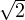 =  where a,b ∈ ℤ+ and b≠0.
By way of contradiction, suppose
where a,b ∈ ℤ+ and b≠0.
By way of contradiction, suppose  is rational. That is, suppose
is rational. That is, suppose
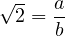
where a,b ∈ ℤ+ and b≠0. Then we have that a = b . Note that b ∈ ℤ+ and
b
. Note that b ∈ ℤ+ and
b = a ∈ ℤ+.
= a ∈ ℤ+.
Let S = {k∣k ∈ ℤ+ and k ∈ ℤ+}. Then S ⊂ ℤ+ and S≠∅ because b ∈ S. By the
well-ordering principle, S has a least element, denote it m. Consider m′ = m
∈ ℤ+}. Then S ⊂ ℤ+ and S≠∅ because b ∈ S. By the
well-ordering principle, S has a least element, denote it m. Consider m′ = m - m.
Observe the following:
- m.
Observe the following:
- m′ = m - m = m(
 - 1). Therefore 0 < m′ < m.
- 1). Therefore 0 < m′ < m.
- Because m ∈ S and S ⊂ ℤ+, m,m
 ∈ ℤ+. So m′∈ ℤ+.
∈ ℤ+. So m′∈ ℤ+.
- Since m ∈ ℤ+ we have 2m ∈ ℤ+, so now consider
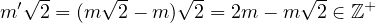
Thus, m′∈ S, which contradicts the fact that m is the least element in S. __
Definition. A real number is algebraic if it is the root of a polynomial with integer
coefficients.
Ex.
- Consider x3 + 3. The roots are x ±
 . So ±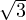 is algebraic.
. So ±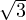 is algebraic.
- Is 7 algebraic? Yes, x - 7.
- Is 3∕2 algebraic? Yes, 3x - 2.
- Is 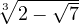 algebraic? Yes (although a bit more complicated)
x =  |  x3 = 2 -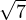 x3 = 2 -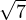 | |
|
|  x3 - 2 = x3 - 2 = | |
|
|  (x3 - 2)2 = 7 (x3 - 2)2 = 7 | |
|
|  x6 - 4x3 + 4 = 7 x6 - 4x3 + 4 = 7 | |
|
|  x6 - 4x3 - 3 = 0 x6 - 4x3 - 3 = 0 | | |
- Is π algebraic? No! So what is it?
Definition. A real number is not algebraic is transcendental (it transcends the ability to be
expressed as a root of a polynomial). So π is transcendental.
It is not difficult to prove the existence of transcendental numbers, but it is difficult to
prove that any given number is transcendental.
Definition. Define ⌊x⌋ to be the largest integer ≤ x. Similarly, define ⌈x⌉ to be the
smallest integer ≥ x.
Ex.
- ⌊5.2⌋ = 5
- ⌊-3.8⌋ = -4
- ⌈5.2⌉ = 6
- ⌈-3.8⌉ = -3
Definition. A set of numbers is countable if it is either finite or it can be placed in
one-to-one correspondance with the positive integers.
Ex. The positive, even integers are countable, as are the integers and the rationals.
Ex. The real numbers are not countable. This is proved by Cantor’s Argument.
Consider all polynomials with integer coefficients. There are countably many of these,
each having countably many roots. Thus there are countably many algebraic numbers
(the countable union of countable sets is countable). So out of ℝ, which is uncountable,
we must have uncountably transcendental numbers (because they are ”everything
else”).
1.2 Sum and Products
_____________________________________________________________________
Here is a quick review of sums and products.
-
1.
- Recall 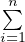ai = a1 + a2 +
 + an.
+ an.
-
2.
- Additionally, some useful identities are:
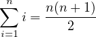
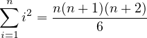

-
3.
- Telescoping sums (using partial fractions) 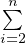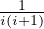 = 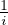 -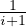.
-
4.
- Product notation 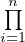ai = a1 × a2 ×
 × an.
× an.
1.3 Mathematical Induction
_____________________________________________________________________
Weak Mathematical Induction. Suppose we wish to prove some statement is true for
all n = 1,2,3, . Induction works as follows. We prove two things
. Induction works as follows. We prove two things
-
1.
- Base Case: We prove it for n = 1.
-
2.
- Inductive Step: We prove that if it is true for some k ≥ 1, then it must be
true for k + 1.
Then we can conclude that it is true for n = 1,2,3,
Ex. Prove 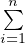i = 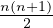 for all n = 1,2,3, .
.
Proof.
-
- Base Case:
-
- Let n = 1, 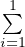i = 1 and 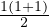 = 1 so the base case is valid.
-
- Inductive Step:
-
- Assume that it is true for some k. That is, assume
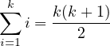
-
- Then consider the sum to k + 1
| ∑
i=1k+1i | = ∑
i=1k + (k + 1) | |
|
| = 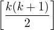 + (k + 1) by IH | |
|
| = 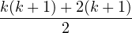 | |
|
| = 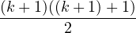 | | |
-
- Thus, by weak induction
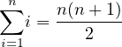
__
Ex. Prove 2n > n! for all n ≥ 4.
Proof.
-
- Base Case:
-
- Let n = 4, 24 = 16 and 4! = 24 so the base case is valid.
-
- Inductive Step:
-
- Assume that it is true for some k ≥ 4. That is, assume
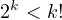
-
- Then consider the equation to k + 1
| 2k+1 | = 2 ⋅ 2k < 2k! < (k + 1)k! = (k + 1)! | | |
-
- Thus, by weak induction
__
Strong Mathematical Induction. Here, for the inductive step, instead of just
assuming its true for k , we assume it is true for 1,2, ,k. Then we show it
is true for k + 1. (The nice thing is we get to assume more for the inductive
hypothesis.)
,k. Then we show it
is true for k + 1. (The nice thing is we get to assume more for the inductive
hypothesis.)
Why would we need to do this alternative form? Often, to prove it is true for k + 1, it is
insufficient to assume it is true for k. We may need earlier values. Ex. Suppose we only
have 3 cent and 7 cent stamps. We claim that we can make any cent postage of 12 or
more cents. Observe that, for example, knowing we can do 50 cents does not tell us we
can do 51 cents! However, we know that if we can do 50 cents we can do 53 cents.
Assume we can do 12, ,k. How can we do k + 1? Well, since we can do 12 to
k, we know can do k - 2. So we just add a 3 cent stamp to k - 2. But this
only hold if k - 2 ≥ 12, which is only true if k ≥ 14. So the inductive step is
only valid for k = 14,15,16,
,k. How can we do k + 1? Well, since we can do 12 to
k, we know can do k - 2. So we just add a 3 cent stamp to k - 2. But this
only hold if k - 2 ≥ 12, which is only true if k ≥ 14. So the inductive step is
only valid for k = 14,15,16, . So as our base case, we must do 12,13, and 14
as base cases! Thus, for strong induction, you actually would want to do the
inductive step first to know how you should setup you base case! In this case we
have,
. So as our base case, we must do 12,13, and 14
as base cases! Thus, for strong induction, you actually would want to do the
inductive step first to know how you should setup you base case! In this case we
have,
| 12 | = 4(3-cent) | |
|
| 13 | = 2(3-cent) + 1(7-cent) | |
|
| 14 | = 2(7-cent) | | |
Thus, by strong induction, we can form any cent postage greater than or equal to 12
with 3 and 7 cent stamps.
1.4 Divisibility
_____________________________________________________________________
Divisibility underlies much of what is done in number theory.
Definition. Given a,b ∈ ℤ with a≠0, we say a divides b if there exists c ∈ ℤ such that
ac = b. When this happens, we say a∣b, otherwise we say a ∤ b.
Ex.
- 5∣20 because 5(4) = 20.
- 7 ∤ 10 because 7c≠10,∀c ∈ ℤ.
Note, we may have b = 0. In fact a∣0 for all a because a(0) = 0 for all a ∈ ℤ. We don’t talk
about either 0∣b nor 0 ∤ b.
Theorem. If a∣b and a∣c then a∣(αb + βc) for any α,β ∈ ℤ.
Proof. a∣b so ∃x ∈ ℤ such that ax = b. Additionally, a∣c so ∃y ∈ ℤ such that ay = c.
Then αb + βc = α(ax) + β(ay) = a(αx + βy). So since αx + βy ∈ ℤ, we have
a∣(αb + βc). __
Theorem. If a∣b and b∣c then a∣c.
Proof. Since a∣b, there ∃x ∈ ℤ such that ax = b. Additionally, b∣c, there ∃y ∈ ℤ
such that by = c. Then c = by = axy = a(xy). So a∣c. __
The Division Algorithm. If a,b ∈ ℤ and b > 0 then !∃q,r ∈ ℤ with 0 ≤ r < b such that
a = bq + r.
Proof. First we’ll prove that q,r exist. Define the set S as follows,
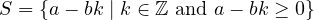 Then S ⊂ ℤ+, therefore S has a least element. Let r be the least element and q be
the k-value which yields it. So r = a - bq is the smallest element in S. Therefore
a = bq + r. We now need to show 0 ≤ r < b.
We know r ≥ 0 because r ∈ S. Suppose r ≥ b. Then note r ≥ b implies that r-b ≥ 0.
Separately, r-b < r because b > 0. Therefore 0 ≤ r-b = (a-bq)-b = a-b(q+1).
Therefore r - b ∈ S, but this means that r is not the least element! This is a
contradiction. Therefore 0 ≤ r < b.
What remains to be shown is uniqueness. By way of contradiction, assume
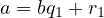
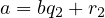 for 0 ≤ r1 < b and 0 ≤ r2 < b. Subtracting the equations, we get 0 = b(q1 -
q2) + (r1 - r2) which implies (r2 - r1) = b(q1 - q2). Therefore b∣(r2 - r1) but
-b < r2 - r1 < b. So r2 - r1 = 0, which means r2 = r1. Therefore 0 = b(q1 - q2)
which implies q1 - q2 = 0 because b > 0. So q1 = q2. __
Definition. Suppose a,b ∈ ℤ with at least one nonzero. We define the greatest common
divisor gcd(a,b), to be the largest integer dividing both.
Definition. For a,b ∈ ℤ, with at least one nonzero. We say that a and b are relatively
prime (or coprime) if gcd(a,b)= 1.
1.5 Problems
_____________________________________________________________________
-
1.
- Determine whether each of the following sets is well-ordered. If so, give a proof
which relies on the fact that ℤ+ is well-ordered. If not, give an example of a subset
with no least element.
-
(a)
- 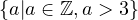
-
(b)
- 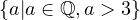
-
(c)
- 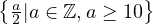
-
(d)
- 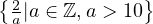
-
2.
- Suppose a,b ∈ ℤ+ are unknown. Let S = 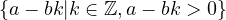. Explain why
S has a smallest element but no largest element.
-
3.
- Use the well-ordering property to show that
 is irrational.
is irrational.
-
4.
- Use the identity
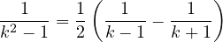 to evaluate the following:
-
(a)
- 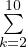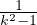
-
(b)
- 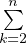
-
(c)
- 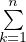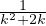 Hint: k2 + 2k = (???)2 - 1
-
5.
- Find the value of each of the following:
-
(a)
- 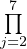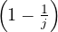
-
(b)
- 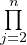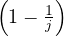
-
(c)
- 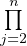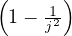 Hint: Be sneaky!
-
6.
- Use weak mathematical induction to prove that
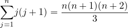 for every positive integer n.
-
7.
- Use Weak Mathematical Induction to show that fnfn+2 = fn+12 + (-1)n+1 for all
n ≥ 1.
-
8.
- Use weak mathematical induction to show that a 2n × 2n chessboard with a corner
missing can be tiled with pieces shaped like 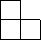
for every integer n ≥ 0.
-
9.
- Define:
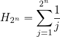 Use weak mathematical induction to prove that for all n ≥ 1 we have
H2n ≤ 1 + n.
-
10.
- Use strong mathematical induction to prove that every amount of postage over 53
cents can be formed using 7-cent and 10-cent stamps.
2 Primes and Greatest Common Divisors
2.1 Pime Numbers
_____________________________________________________________________
Primes are important in number theory because they are the building blocks for the
positive integers. Many things about ℤ+ have been proven by focusing on primes (this is
done all the time in abstract algebra).
Definition. An integer greater than 1 is called prime if its only positive divisors are 1
and itself.
Definition. An integer greater than 1 is called composite if it is not prime.
Theorem. Every integer greater than 1 has at least one prime divisor.
Proof. By way of contradiction, suppose there’s an integer greater than 1 with no
prime divisors. Let S = {all integers greater than 1 with no prime divisors}. Then
S ⊂ ℤ+ and S≠∅. So S must have a least element. Call this n. So n is the smallest
element with no prime divisors. Well, n divides n, so since n is a divisor of n, n is
not prime, so it is composite. So n = ab with 1 < a < n and 1 < b < n.
Consider a. Since a < n, we know a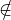S. So a has at least one prime divisor, call it
p. So p∣a and a∣n, which means p∣n. This is a contradiction! __
Theorem. There are infinetely many primes.
Proof. Assume there are fineitely many primes. Denote them by p1,p2, ,pn.
Construct the number N = p1 × p2 ×
,pn.
Construct the number N = p1 × p2 × × pn + 1. By the previous theorem, there
is a prime divisor of N. This must then equal pi, for some 1 ≤ i ≤ n. So pi∣N but
pi∣p1p2pn as well. So pi∣1 because 1 = N - p1p2
× pn + 1. By the previous theorem, there
is a prime divisor of N. This must then equal pi, for some 1 ≤ i ≤ n. So pi∣N but
pi∣p1p2pn as well. So pi∣1 because 1 = N - p1p2 pn. This is a contradiction
because pi is a prime which means pi > 1. __
pn. This is a contradiction
because pi is a prime which means pi > 1. __
Theorem If n is composite then n has a prime factor less than or equal to
 .
.
Proof. Suppose n is composite. So n = ab where 1 < a < n and 1 < b < n. We
know one of a,b is ≤ , otherwise ab >
, otherwise ab >  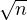 = n. Without loss of generality,
suppose a ≤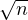. We know a has a prime divisor p, so p∣a. So p ≤ a ≤. Since
p∣a and a∣n, we have that p∣n. __
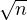 = n. Without loss of generality,
suppose a ≤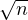. We know a has a prime divisor p, so p∣a. So p ≤ a ≤. Since
p∣a and a∣n, we have that p∣n. __
The last theorem is useful, because it theoretically reduces the amount of computation
needed to check if a number is prime. That is, rather than dividing n by all
numbers less than it, we only need to divide by numbers less than or equal to
.
Suppose you started with the number 20 and added multiples of 7. In that resulting list
of numbers, how many primes are there? It turns out that under certain conditions,
there are infinitely many! This is stated in Dirichlet’s Theorem on Arithmetic
Progressions.
Theorem. Suppose a,b ∈ ℤ with gcd(a,b)=1. Then the sequence
contains infinitely many primes. The proof for this is incredibly difficult and requires a
deep understanding of algebra and analysis to prove it. (Well beyond the scope of this
course. See this as the proof.)
Ex. Suppose a = 20 and b = 7. Then the sequence 27,24,41,48,55,62, contains
infinitely many primes.
contains
infinitely many primes.
2.2 The Distribution of Primes
_____________________________________________________________________
We know there are infinitely many primes, but how are they distributed? Is there a
formula for the nth prime or do we have to go looking for it? Unfourtunately, there is no
such formula. (If we knew a formula, then the idea of ’finding’ the next largest prime
would not be very interesting!)
Definition. Define pn = nth prime. Let π(x) be the number of primes ≤ x (note that x
does not need to be an integer).
Ex. p1 = 2,p2 = 3,p3 = 5,p4 = 7, etc...
Ex. π(7) = π(8) = π(8.1) = 4 because 2,3,5,7.
Prime Number Theorem. We have
Like
Dirichlet’s Theorem, the proof of this theorem is extremely difficult to understand and is
even moreso beyond the scope of this course. In essence, the proof says that for very large
x we have that π(x) ≈.
Corollary. If pn = nth prime then
The consequence is that for very large n, pn ≈ nln(n). This tells us that the
primes get more and more spread out as we move further down the number
line.
Ex. The millionth prime is approximately 106 ⋅ ln(106) = 12,815,510.56. In reality, the
millionth prime is the number 15,485,863. So we are not terribly far off from our
approximation, relatively speaking.
So we have an idea of how the prime are distributed, but what about the gaps between
them?
Gaps Between Primes. There are arbitrarily long sets of consecutive composite
numbers. (That is, given any large enough gap desired, we can find a gap that big
between consecutive primes.)
Proof. For any n, consider:
There are n numbers here. Observe that (n + 1)! + 2 is divisble by 2, so it is
composite, (n + 1)! + 3 is divisble by 3, so it is composite... and so on, all the way
up to (n + 1)! + (n + 1) which is divisble by (n + 1) so it is composite! Therefore,
we have a string of n consecutive composite numbers. __
Ex. If we need 6 consecutive composites, we have that
is a
string of 6 consecutive composites. Observe that this is nowhere near the most efficient
way to find 6 consecutive composites (because factorials become large very quickly), but
it works!
Conjectures Here are a few conjectures that are believed to be true but have not been
proven yet.
- Twin Prime Conjecture. There are infinetely many twin primes (primes
that differ by 2, think 3 and 5 or 5 and 7, etc...)
- Goldbach Conjecture. Every even integer greater than 2 can be written
as the sum of two primes (not necessarily distinct primes). For example,
10 = 5 + 5 or 12 = 5 + 7, etc...
- Legendre Conjecture. There is a prime between the squares of any two
consecutive integers. (This conjecture is relatively reasonable because the gaps
between squares get larger as the numbers get larger.)
2.3 Greatest Common Divisors
_____________________________________________________________________
Theorem. Suppose d =gcd(a,b). Then gcd = 1.
Theorem. gcd(a,b)=gcd(a + αb,b), with α ∈ ℤ and gcd(a,b)=gcd(a,b + αa).
Ex. gcd(18,7)=gcd(18,7 + 42(18))
Proof.
- Suppose c is a common divisor of a,b. So c∣a and c∣b so c∣a + αb. So c is a
common divisor of a + αb,b.
- Suppose c is a common divisor of a+αb,b. So c∣a+αb and c∣b so c∣(a+αb)-α(b)
So c∣a so c is a common divisor of a,b.
So the pairs a,b and a + αb,b have the same common divisors, so they have the same
gcd. __
Theorem. Let a,b ∈ ℤ not both 0. Then gcd(a,b) = smallest positive linear combination
of a and b.
Ex. Look at a = 15, b = 35. gcd(15,35) = 5 (we know this). Some linear combinations
would be; 1(15) + 1(35) = 50, 2(15) - 3(35) = -75, -2(15) + 1(35) = 5. The theorem
shows that -2(15) + 1(35) = 5 is the smallest positive linear combination.
Proof. Let d = αa + βb be the smallest positive linear combination of a,b (∃ by
well-ordering of ℤ+). Claim d =gcd(a,b). First lets show d∣a and d∣b then show it
is the greatest. By the division algorithm a = dq + r with 0 ≤ r < d. So then
r = a-dq = a-(αa+βb)q = (1-αq)a-βqb which is a linear combination of a,b.
So r = 0 so a = dq so d∣a. Likewise, d∣b (same argument).
So d∣a and d∣b, but why is it greatest?
Suppose some c∣a and c∣b. Then c∣αa+βb = d so c ≤ d therefore d is the greatest! __
This is important because when working with gcd we can express it as a linear
combination to work with it!
Ex. If we’re working with gcd(a,b), we can write: aha, ∃α,β such that gcd(a,b) = αa + βb.
Then we work with αa + βb instead.
Corollary. If a,b are coprime then ∃α,β such that 1 = αa + βb.
Theorem. If a,b ∈ ℤ+ not both 0, then the set of linear combinations of a and b equals
the set of multiples of gcd(a,b).
Ex.
gcd(35,15)=5. All linear combinations of 35,15 are multiples of 5 and all multiples of 5
are linear combinations.
Proof. Suppose x = αa + βb = linear combination of a,b. Since gcd(a,b)∣a and
gcd(a,b)∣b then gcd(a,b)∣αa + βb = x. Thus, {αa + βb} = {mult. of gcd(a,b)}.
Then consider a multiple of cgcd(a,b). Well gcd(a,b) = αa + βb for some α,β ∈ ℤ.
So cgcd(a,b) = αca+βcb = linear combinations of a,b. Thus {mult. of gcd(a,b)}⊂
{linear combinations of a,b}. __
Theorem. Suppose a,b ∈ ℤ not both 0, suppose d ∈ ℤ+. Then d =gcd(a,b) if d has these
two properties:
- d∣a and d∣b.
- c∣a and c∣b then c∣d.
Proof.
→ Suppose d =gcd(a,b). Obviously this meets the first property because d is a
common divisor. To show the second property, suppose c∣a and c∣b. Well d = αa+βb
for some α,β ∈ ℤ so c∣a,c∣b c∣d.
c∣d.
← Suppose d satisfies the two properties, since d∣a and d∣b, it is a common divisor.
But why is it the greatest? Well if c is a common divisor (positive) then since c∣a
and c∣b by property 2 c∣d. So c ≤ d. Thus d =gcd(a,b). __
If we know gcd(a,b) = 20, then not only are other positive common divisors smaller, but
they are only 1,2,4,5,10 that’s it!
2.4 The Euclidean Algorithm
_____________________________________________________________________
The goal of this section is to talk about the Euclidean Algorithm from a computational
perspective and see what it can be used for. It is not theoretically significant, but it is a
useful tool. Suppose a,b ∈ ℤ, not both zero. Two things we would like to do are (1)
calculate gcd(a,b) and (2) find α,β such that gcd(a,b) = αa + βb. Both of these can be
accomplished using the Euclidean Algorithm!
Recall we saw that gcd(a,b) = gcd(a + αb,b). That is, we can ± any multiple of one
to the other and the gcd does not change. Suppose a > b. We know by the
Division Algorithm that a = qb + r where 0 ≤ r < b. Then r = a - qb, which
means
Thus, we can replace the larger of a and b by the remainder we get when we divide by the
smaller. When we do this, wthe roles of the larger and smaller switch. We repeat this
until we get the desired result.
Ex. Suppose we want gcd(252,198). Well,
So
gcd(252,198)=gcd(54,198). Again,
So
gcd(252,198)=gcd(54,198)=gcd(54,36). Again,
So
gcd(252,198)=gcd(54,198)=gcd(54,36)=gcd(36,18). Again,
So
gcd(252,198)=gcd(54,198)=gcd(54,36)=gcd(36,18)=gcd(18,0)=18.
Therefore, gcd(252,198)=18.
In practice, we can do this by repeated replacements of our division algorith,s
(without writing the gcd’s at each step). The last nonzero remainder is our
gcd.
Ex. To find gcd(97,44), we do the following.
| 97 | = (2)44 + 9 | |
|
| 44 | = (4)9 + 8 | |
|
| 9 | = (1)8 + 1 | |
|
| 8 | = (1)8 + 0 | | |
So the gcd is 1.
Now, to find a linear combination, we use these successive divisions from the final gcd up
to get the linear combination. We do this by replacing remainders. Keep track
carefully!
Ex. For a = 252 and b = 198, we know that
| 252 | = (1)198 + 54 | |
|
| 198 | = (3)54 + 36 | |
|
| 54 | = (1)36 + 18 | |
|
| 36 | = (2)18 + 0 | | |
So we start with the last nonzero remainder, which in this case is 18. We know, from
the second equation that
| 18 | = 1(54) - 1(36) | |
|
| = 1(54) - (198 - (3)54) | |
|
| = 4(54) - (1)198 | |
|
| = 4(252 - (1)198) - (1)198 | |
|
| = 4(252) - 5(198) | |
|
| = αa + βb | | |
where α = 4 and β = -5.
2.5 Fundamental Theorem of Arithmetic
_____________________________________________________________________
We want to work our way up to proving the Fundamental Theorem of Arithmetic. To
prove this, we will need a few lemmas.
Lemma. Suppose a,b,c ∈ ℤ+ with a∣bc and gcd(a,b) = 1 then a∣c.
Proof. First write 1 = αa + βb with α,β ∈ ℤ. Then c = αac + βbc. We know that
a∣αac and a∣βbc. So a∣αac + βbc so a∣c. __
Note, in general, a∣bc does not imply a∣b or a∣c!
Euclid’s Lemma. Suppose p is prime. If p∣ab then p∣a or p∣b (or both).
Proof. If p∣a we are done. If p ∤ a then gcd(p,a) = 1, so p∣b by the above lemma. __
In more abstract settings (in MATH 403, for example) this is the definition of what an
abstract object means to be prime!
Euclid’s Lemma (General). Suppose p is prime. If p∣a1a2 ak, then p∣ai for some
i.
ak, then p∣ai for some
i.
Proof. Induction! __
Fundamental Theorem of Arithmetic. For n ∈ ℤ where n ≥ 2. We can write n
uniquely as a product of primes where ”uniquely” means up to the ordering. (That is,
45 = 3 ⋅ 3 ⋅ 5 = 3 ⋅ 5 ⋅ 3 = 5 ⋅ 3 ⋅ 3 are considered identical.) The ’unique’ part of this
theorem is not to be taken for granted. In abstract algebra, many objects’ objects can be
factored into what are called ’irreducibles’ but it will not always be the case that this
factorization is unique!
Proof. First, we need to show that for any n ∈ ℤ+ where n ≥ 2 that n can be written
as a product of primes. By way of contradiction, suppose there exists integers ≥ 2
which cannot be written as the product of primes. Let n be the smallest of such
numbers, which exists by well-ordering. Is n itself prime? If so, then
which is a contradiction! If n is not prime, then n = ab where 1 < a < n and
1 < b < n. But since a,b < n, they are products of primes. But then n can also be
expressed as a product of primes, another contradiction.
What remains to be shown is that there is a unique prime factorization. Suppose
not. That is, suppose
Let us assume we have cancelled all common primes between the p and q set.
Thus pi≠ql for all i,l. Since p1, ,pk = q1,
,pk = q1, qj, we know p1∣q1
qj, we know p1∣q1 qj. Thus, by the
lemma, p1∣qi for some i. But p1≠qi and p1≠1. This is a contradiction! __
qj. Thus, by the
lemma, p1∣qi for some i. But p1≠qi and p1≠1. This is a contradiction! __
We have several consequences of the Fundamental Theorem of Arithmetic.
Related to division:
We know 20∣80 in terms of primes 22 ⋅ 5∣24 ⋅ 5. In gcd(a,b), for any pα appearing in a,
there must be a pβ with β ≥ α in b.
Theorem. For a,b ∈ ℤ with a,b ≥ 2. Then a∣b if and only if, whenever pα appears in the
PF of a, pβ with β ≥ α appears in the PF of b.
Proof.
← Suppose a,b have the property that whenever pα appears in the prime
factorization of a, then pβ, where β ≥ α appears in the prime factorization of b.
Then,
where βi ≥ αi for all i. Then
Therefore, b = am for some m ∈ ℤ. So a∣b.
→ By contradiction, assume a∣b and pα appears in PF of a and pβ appears (or not)
in PF of b with 0 ≤ β < α. Since pα appears in PF of a we can write
Since a∣b,∃c such that ac = b. It follows
p appears on the left (in PF of left side) hence it must be in the PF of right side
(because they’re the same number). But p ∤ B which is a contradiction. __
Related to Factors:
Theorem. The positive divisors of some n ≥ 2 can all be constructed by taking the
primes which appear in the PF of n to at most those powers.
Proof. Follows from the previous theorem. __
Ex. Find all factors of 23527. Factors all have the form 2α15α27α3 with 0 ≤ α1 ≤ 3,
0 ≤ α2 ≤ 2, 0 ≤ α3 ≤ 1. Thus there are (4)(3)(2) = 24 factors!
Related to GCD:
Theorem. The gcd of two numbers a,b can be found by taking the set of primes which
appear in both a and b (intersection) to the power which is the minimum of the two
powers.
Ex. gcd(23 ⋅ 74 ⋅ 11,22 ⋅ 75 ⋅ 13) = 22 ⋅ 74
Related to LCM:
The least common multiple is the smallest integer which both a and b are factors of.
lcm(20,30) = 60.
Theorem. The lcm of two numbers a,b can be found by taking the set of primes which
appear in either a and b (union) to the power which is the maximum of the two
powers.
Ex. lcm(23 ⋅ 74 ⋅ 11,22 ⋅ 75 ⋅ 13) = 23 ⋅ 75 ⋅ 11 ⋅ 13
Together:
Theorem. We have ab =gcd(a,b)lcm(a,b).
Proof. Follows immediately. __
So lcm(a,b) = and gcd(a,b) = .
Theorem. Suppose n1,n2 ∈ ℤ with gcd(n1,n2) = 1. Suppose d∣n1n2, then d = d1d2
where gcd(d1,d2) = 1 and d1∣n1 and d2∣n2.
Proof. d1 = all primes in d which appear in n1 (not n2). Likewise, d2 = all primes
in d which appear in n2 (not n1). __
2.6 Problems
_____________________________________________________________________
-
1.
- Use the Euclidean Algorithm to calculate d = gcd(510,140) and then use the
result to find α and β so that d = 510α + 140β.
-
2.
- Use the Euclidean Algorithm to show that if k ∈ ℤ+ that 3k + 2 and 5k + 3
are relatively prime.
-
3.
- How many zeros are there at the end of (1000!)? Do not do this by brute force.
Explain your method.
-
4.
- Let a = 1038180 and b = 92950. First find the prime factorizations of a and
b. Then use these to calculate gcd(a,b) and lcm(a,b).
-
5.
- Which pairs of integers have gcd of 18 and lcm of 540? Explain.
-
6.
- Suppose that a ∈ ℤ is a perfect square divisible by at least two distinct primes.
Show that a has at least seven distinct factors.
-
7.
- Show that if a,b ∈ ℤ+ with a3b2 then a
 b.
b.
-
8.
- For which positive integers m is each of the following statements true:
-
(a)
- 34 ≡ 10 modm
-
(b)
- 1000 ≡ 1 modm
-
(c)
- 100 ≡ 0 modm
3 Congruences
3.1 Introduction to Congruences
_____________________________________________________________________
-
1.
- Introduction: Suppose you wished to find x,y ∈ ℤ satisfying 2x2 - 8y = 11.
There is no solution because no matter what, 2x2-8y is even and 11 is odd. What
if even/odd does not work... what else might? 3x2-15y = 8, 3 divides the left side
but not the right. If even/odd or divided by 3 works, there is no guarantee that it
works
might work.
The idea of modular arithmetic formalizes all of this.
-
2.
- Definition and Equivalencies: For a,b,m ∈ ℤ with m ≥ 2 we write a ≡ b mod m
which is read as ”a and b are congruent modulo m.” to mean that m∣(a - b). A few
notes on this,
- Equivalent to saying m∣(b - a).
- Equivalent to saying ∃c ∈ ℤ such that mc = a - b or ∃x ∈ ℤ such that
mc = b - a (definition of divisibility).
- Equivalent to saying that if we divide a and b by m, the remainders are the
same.
Ex. 8 ≡ 18 mod 5 in fact 8 ≡ 18 ≡ 3 ≡-2 ≡ 23 ≡ mod 5. Here with remainder 3.
Also note 5∣(18 - 8) and 5∣(8 - 18).
mod 5. Here with remainder 3.
Also note 5∣(18 - 8) and 5∣(8 - 18).
Even/odd is the same as m = 2.
CS Note. In computer science we often define mod(a,m) = remainder when
a∕m = a%m. It is not uncommon to see a = b mod m or a ≡mb (strongly
discouraged).
Moving forward, please use a ≡ b mod m.
-
3.
- Properties:
-
(a)
- Theorem. Congruence acts like an equals sign in the following sense:
-
(i)
- a ≡ a mod m (Reflexive).
-
(ii)
- if a ≡ b mod m then b ≡ a mod m (Symmetric).
-
(iii)
- If a ≡ b mod m and b ≡ c mod m then a ≡ c mod m (Transitivity).
Proof. a ≡ b mod m ∃x such that a-b = mx, b ≡ c mod m
∃x such that a-b = mx, b ≡ c mod m ∃y
such that b-c = my. Then a-c = (a-b)+(b-c) = mx+my = m(x+y)
so m∣(a - c) so a ≡ c mod m. __
∃y
such that b-c = my. Then a-c = (a-b)+(b-c) = mx+my = m(x+y)
so m∣(a - c) so a ≡ c mod m. __
-
(iv)
- If a ≡ b mod m and c ≡ mod m then a ± c ≡ b ± d mod m.
- If we know x ≡ y mod 5 we can conclude x + 7 ≡ y + 7 mod 5 and
also x + 7 ≡ y + 12 mod 5.
-
(v)
- If a ≡ b mod m and c ≡ d mod m then ac ≡ bd mod m
- If we know x ≡ y mod 5 then we can conclude 17x ≡ 17y mod 5
but we can also conclude 17x ≡ 12y mod 5
-
(vi)
- If a ≡ b mod m and k ∈ ℤ,k ≥ 1 then ak ≡ bk mod m. (Note: we can not use
different powers!)
-
(b)
- Division Issues. First everything must be an integer, so does
2 ≡ 8 mod 6
 ≡ mod 6 this is garbage because ,ℤ. However, is
2 ≡ 8 mod 6
≡ mod 6 this is garbage because ,ℤ. However, is
2 ≡ 8 mod 6
 ≡ mod 6 true? No! because 1 ≡ 4 mod 6 is not true. The
point is even if division makes both sides integers there is no guarantee that the
congruence is preserved!
≡ mod 6 true? No! because 1 ≡ 4 mod 6 is not true. The
point is even if division makes both sides integers there is no guarantee that the
congruence is preserved!
Theorem. Suppose we have ac ≡ bc mod m then a ≡ b mod m∕gcd(m,c).
In other words we may cancel an integer from both sides provided we
divide the modulus by the gcd of the modulus and the integer we’re
canceling.
Proof. Suppose ac ≡ bc mod m, ∃k ∈ ℤ with mk = ac-bc. So mk = c(b-a),
 Note that from a previous theorem we know that:
Note that from a previous theorem we know that:
 Then the above statement says that
Then the above statement says that  (a-b) which implies
a - b. Therefore, a ≡ b mod . __
(a-b) which implies
a - b. Therefore, a ≡ b mod . __
Note. Don’t think division, think cancelation when dealing with modulo.
Ex. If we know that 4x ≡ 8y mod 50 then we can conclude that
x ≡ 2y mod 50∕gcd(50,4) and so x ≡ 2y mod 25 (think cancel the 4).
Corollary. If ac ≡ bc mod m and gcd(c,m) = 1 then a ≡ b mod m.
Ex. 15x ≡ 20y mod 27, note that gcd(5,27) = 1 so we may cancel the 5. So
3x ≡ 4y mod 27.
-
4.
- Residue Classes:
-
(a)
- Introduction: Suppose we are working mod m = 5. We know
0 ≡ 5 ≡ 10 ≡-5 ≡
 mod 5, we also know 1 ≡ 6 ≡ 11 ≡-4 ≡
mod 5, we also know 1 ≡ 6 ≡ 11 ≡-4 ≡ mod 5, all of
ℤ fall into one out of m = 5 classes.
mod 5, all of
ℤ fall into one out of m = 5 classes.
{ ,-15,-10,-5, ,-15,-10,-5, | 0,5,10,15, } } | |
|
{ ,-16,-9,-4, ,-16,-9,-4, | 1,6,11,16, } } | |
|
{ ,-13,-8,-3, ,-13,-8,-3, | 2,7,12,17, } } | |
|
{ ,-12,-7,-2, ,-12,-7,-2, | 3,8,13,18, } } | |
|
{ ,-11,-6,-1, ,-11,-6,-1, | 4,9,14,19,…} | | |
-
(b)
- Definition. For a given m ≥ 2 there are m congruence classes.
-
(c)
- Definition. From each we may pick a representative of the class so those would
be m representatives.
Ex. m = 5 : {0,1,2,3,4} (the obvious one) or you could use m = 5 : {0,2,4,6,8}
(all even) or m = 5 : {0,2,4,8,16} (all powers of 2, except 0).
Ex. m = 5 : {0,1,2,3,4} (the obvious one) or you could use m = 5 : {0,2,4,6,8}
(all even) or m = 5 : {0,2,4,8,16} (all powers of 2, except 0).
-
(d)
- Definition. The set of representatives {0,
 ,m- 1} = the complete set of least
non-negative residues.
,m- 1} = the complete set of least
non-negative residues.
-
- In ℝ, 17x = 48246319
 x = log 17(48246319). Now consider ℤ mod 100,
6x ≡ 88 mod 100 is significantly harder to solve (the discrete logarithm
problem).
x = log 17(48246319). Now consider ℤ mod 100,
6x ≡ 88 mod 100 is significantly harder to solve (the discrete logarithm
problem).
-
(e)
- Definition. A complete set of residues (CSOR) mod m is a set of m integers, no
two of which are congruent mod m.
Ex. m = 5: here are 3 CSORs: {0,1,2,3,4}, {0,2,4,6,8}, {0,2,4,8,16}, and
more!
-
(f)
- Theorem. A subset S of ℤ is a CSOR mod m if and only if every integer is
congruent to exactly one element in S.
Ex. m = 4: S = {0,9,14,3} some observations:
- m = 4 of them.
- No two are congruent to each other.
- Any a ∈ ℤ is congruent to exactly one of these.
-
(g)
- Theorem. If {r1,r2,
 ,rm} is a CSOR mod m and if a,b ∈ ℤ with
gcd(a,m) = 1 then {ar1 + b,ar2 + b,
,rm} is a CSOR mod m and if a,b ∈ ℤ with
gcd(a,m) = 1 then {ar1 + b,ar2 + b, ,arm + b} if also a CSOR mod
m.
,arm + b} if also a CSOR mod
m.
Proof. We will show that no two are congruent mod m. Suppose ari + b ≡
arj+b mod m with i≠j. Then ari ≡ arj mod m ri ≡ rj mod m because
gcd(a,m) = 1. Contradiction because the ri,rj came from a CSOR mod
m. __
ri ≡ rj mod m because
gcd(a,m) = 1. Contradiction because the ri,rj came from a CSOR mod
m. __
Ex. {0,1,2,3,4} CSOR mod 5. Pick a = 9,b = 42, {0⋅9+42,1⋅9+42,2⋅9+42,3⋅9+42,4⋅9+42}
is also a CSOR mod 5.
-
5.
- Fast Arithmetic - Fast Exponentiation. Suppose we wished to calculate
2503 ≡ a mod 5, a = 0,1,2,3,4 but which one? Warning: Do not reduce exponent mod
5! 2503 ≡ 2x mod 5.
-
(a)
- Look for patterns: 21 ≡ 2 mod 5, 22 ≡ 4 mod 5, 23 ≡ 3 mod 5, 24 ≡ 1 mod 5,
25 ≡ 2 mod 5. This last one is a repeat, so it repeats every 4. Note 503 = 4(125) + 3
so
| 2503 | ≡ 24(503)23 | |
|
| ≡ (1)12523 mod 5 | |
|
| ≡ (1)8 mod 5 | |
|
| ≡ 3 mod 5 | | |
-
(b)
- Use binary expansions. Suppose we want 381 ≡ a mod 5. 31 ≡ 3, 32 ≡ 4, 34 ≡ 1,
38 ≡ 1, 316 ≡ 1, 332 ≡ 1, 364 ≡ 1. Then 81 = 64 + 16 + 1 so
| 381 | = 36431631 | |
|
| ≡ 1 ⋅ 1 ⋅ 3 | |
|
| ≡ 3 mod 5 | | |
3.2 Solving Linear Congruences
_____________________________________________________________________
-
1.
- Introduction: The idea is that we would ideally like to solve ”equations” like
3x2 + x ≡ 5 mod 72, 8x ≡ 12 mod 5, etc... So let’s go back to basics.
Definition: A linear congruence has the form ax ≡ b mod m. We would like to find
all possible solutions, whatever that means.
Process:
-
(a)
- Do solutions exist?
-
(b)
- If so, can we find just one?
-
(c)
- Can we find more?
-
(d)
- When are they ”different”
-
2.
- Do Solutions Exist: To say that ax ≡ b mod m has a solution means, ∃x
such that ax ≡ b mod m which in turn means ∃x,∃y such that ax + my = b
(ax ≡ b mod m
 m∣(ax-b)
m∣(ax-b) my = ax-b
my = ax-b ax-my = b). This means that b is
a linear combination of a,m.
ax-my = b). This means that b is
a linear combination of a,m.
Recall: {Linear combination of a,m} = { multiples of gcd(a,m)}.
Thus, b is a linear combination of a,m when b =multiple of gcd(a,m), so
ax ≡ b mod m has solution(s) if and only if gcd(a,m)∣b.
Ex. 2x ≡ 8 mod 18 has solutions, because gcd(2,18)=2∣8.
6x ≡ 8 mod 36 does not, because gcd(6,36)=6 ∤ 8.
-
3.
- Finding One Solution: We would like to solve ax + my = b, with b as a multiple of
gcd(a,m). Well, we can solve ax′ + my′ = gcd(a,m)! But how? With the Euclidean
Algorithm. Use the Euclidean Algorithm to solve ax′ + my′ = gcd(a,m) then multiple
both sides to get b on the right.
Ex. Consider 4x ≡ 6 mod 50. We have gcd(4,50)=2∣6 so solutions exist. First we use
the Euclidean Algorithm to solve:
This gives
us 4 x′+
50
y′ = 2,
we want to get a 6 on the right hand side so multiple by 3. So then we get
4
x +
50
y = 6,
so 4(-36) ≡ 6 mod 50. Typically, we will use the least non-negative residue (add until
you get a non-negative). So here the solution is x0 = (-36) + 50 = 14.
-
4.
- Finding All Solutions: Suppose we have our one solution, x0
 ax0 ≡ b mod m.
Suppose now x is another, this implies ax ≡ b mod m. So we subtract the second from
the first
ax0 ≡ b mod m.
Suppose now x is another, this implies ax ≡ b mod m. So we subtract the second from
the first
| a(x) - a(x0) | ≡ b - b mod m | |
|
| a(x - x0) | ≡ 0 mod m | |
|
| x - x0 | ≡ 0 mod | | |
So,
Warning! Solutions must look like this but are all things which look like this actually
solutions?
We would like ax ≡ b mod m.
| ax | ≡ a mod m | |
|
| ax | ≡ b + lcm mod m | |
|
| ax | ≡ b + klcm(a,m) mod m | |
|
| ax | ≡ b mod m | | |
Therefore all solutons can be gained by doing, x = x0 + k,∀k ∈ ℤ.
Lastly, when are they unique mod m?
Consider that two of them with k1 and k2 are identical mod m when:
| x0 + k1 | ≡ x0 + k2 mod m | |
|
| k1 | ≡ k2 mod m | |
|
| k1 | ≡ k2 mod | |
|
| k1 | ≡ k2 mod gcd(a,m) | | |
Therefore, it follows that solutions will be congruent mod m when k-values are
congruent mod gcd(a,m). So solutions are not congruent mod m by ensuring
that the k-values are not congruent mod gcd(a,m). This can be done using
k = 0,1,2, ,gcd(a,m) - 1.
,gcd(a,m) - 1.
-
5.
- Summary Theorem: The linear congruence ax ≡ b mod m has solutions if and only
if gcd(a,m)∣b. If it has solutions then it has gcd(a,m) unique solutions mod m. If x0 is
one of those then all are
Ex. 20x ≡ 15 mod 65, gcd(20,65)=5∣15 so ∃5 incongruent solutions mod 65. The
Euclidean Algorithm gives us a solution x0 ≡ 56 mod 65. So all solutions are
then
That is x ≡ 56,4,17,30,43 mod 65.
Note: If gcd(a,m) = 1 there exists only one solution mod m.
3.3 The Chinese Remainder Theorem
_____________________________________________________________________
-
1.
- Introduction: How can we solve systems of linear congruences? For example, suppose
we wished to find x satisfying all of these:
| x | ≡ 2 mod6 | |
|
| x | ≡ 4 mod7 | |
|
| x | ≡ 3 mod25 | | |
Is it always possible to find a solution to something like this? No! However, under
certain circumstances, yes!
-
2.
- Chinese Remainder Theorem: Suppose we have a system of the form
| x | ≡ a1 modm1 | |
|
| x | ≡ a2 modm2 | |
|
|  | |
|
| x | ≡ an modmn | | |
If all the mi are pairwise coprime (so gcd(mi,mj) = 1,∀i,j), then ∃! solution mod
M = m1m2 mn. So for our example, since 6,7,25 are all pairwise coprime, ∃!
solution mod (6)(7)(25) = 1050.
mn. So for our example, since 6,7,25 are all pairwise coprime, ∃!
solution mod (6)(7)(25) = 1050.
Proof. For each i define Mi = M∕mi, then consider the equation:
Note that gcd(Mi,mi) = 1 .
because the mi are all coprime. Since gcd(Mi,mi) = 1∣1,∃! solution mod mi.
Let yi be that solution. Take all yi and construct the integer:
Claim that this is a solution to the system. Pick some i and observe that
| x | ≡ a1M1y1 + a2M2y2 +  + anMnyn modmi + anMnyn modmi | |
|
| ≡ 0 + 0 +  + aiMiyi + + aiMiyi +  + 0 modmi + 0 modmi | |
|
| | |
|
| x | ≡ ai(1) modmi | |
|
| x | ≡ ai modmi | | |
Claim x is unique mod M. Suppose x1,x2 are both solutions to the original
system.

 From here we get,
From here we get,
| x1 | ≡ x2 modm1 m1∣(x1 - x2) m1∣(x1 - x2) | |
|
| x1 | ≡ x2 modm2 m2∣(x1 - x2) m2∣(x1 - x2) | |
|
|  | |
|
| x1 | ≡ x2 modmn mn∣(x1 - x2) mn∣(x1 - x2) | | |
Since the mi are all pairwise coprime, we get
Thus, x1 ≡ x2 modM. __
-
3.
- Example: Take a look at
| x | ≡ 2 mod6 | |
|
| x | ≡ 4 mod7 | |
|
| x | ≡ 3 mod25 | | |
This means that M = (6)(7)(25) = 1050 and that M1 = = 175, M2 = = 150,
M3 = = 42.
- Solve for y1:
| M1y1 | ≡ 1 modm1 | |
|
| 175y1 | ≡ 1 mod6 | |
|
| 1y1 | ≡ 1 mod6 | |
|
| y1 | = 1 | | |
- Solve y2:
| M2y2 | ≡ 1 modm2 | |
|
| 150y2 | ≡ 1 mod7 | |
|
| 3y2 | ≡ 1 mod7 | |
|
| y2 | ≡ 5 mod7 | |
|
| y2 | = 5 | | |
- Solve y3:
| M3y3 | ≡ 1 modm3 | |
|
| 42y3 | ≡ 1 mod25 | |
|
| 17y3 | ≡ 1 mod25 | |
|
| y3 | ≡ 3 mod25 | |
|
| y3 | = 3 | | |
Now for the solution,
| x | ≡ (2)(175)(1) + (4)(150)(5) + (3)(42)(3) mod1050 | |
|
| x | ≡ 3728 ≡ 578 mod1050 | | |
3.4 Problems
_____________________________________________________________________
-
1.
- Calculate the least positive residues modulo 47 of each of the following with
justification:
-
(a)
- 2543
-
(b)
- 32932
-
(c)
- 46327349287323
-
2.
- Exhibit a complete set of residues mod 17 composed entirely of multiples of
3.
-
3.
- Show that if a,b,m ∈ ℤ with m > 0 and if a ≡ b modm then gcd(a,m) = gcd(b,m).
-
4.
- Suppose p is prime and x ∈ ℤ satisfies x2 ≡ x modp. Prove that x ≡ 0 modp
or x ≡ 1 modp. Show with a counterexample that this fails if p is not
prime.
-
5.
- Show that if n is an odd positive integer or if n is a positive integer divisible by 4
that:
-
6.
- Find all solutions (mod the given value) to each of the following.
-
(a)
- 10x ≡ 25 mod75
-
(b)
- 9x ≡ 8 mod12
-
7.
- Solve each of the following linear congruences using inverses.
-
(a)
- 3x ≡ 5 mod17
-
(b)
- 10x ≡ 3 mod11
-
8.
- What could the prime factorization of m look like so that 6x ≡ 10 modm has at
least one solution? Explain.
-
9.
- Use the Chinese Remainder Theorem to solve:
A troop of monkeys has a store of bananas. When they arrange them into 7 piles,
none remain. When they arrange them into 10 piles there are 3 left over. When
they arrange them into 11 piles there are 2 left over. What is the smallest positive
number of bananas they can have? What is the second smallest positive
number?
-
10.
- Solve the system of linear congruences:
| 2x + 1 | ≡ 3 mod10 | |
|
| x + 2 | ≡ 7 mod9 | |
|
| 4x | ≡ 1 mod7 | | |
4 Special Congruences
4.1 Wilson’s Theorem & Fermat’s Little Theorem
_____________________________________________________________________
-
1.
- Wilson’s Theorem: If p is prime then
Proof. The case where p = 2 is trivial to show, so let’s look at primes p ≥ 3.
Consider the set of numbers
even number of integers.
Suppose a is one of these, then ∃b ∈ ℤ such that ab ≡ 1 modp (a multiplicative
inverse). Because the equation ax ≡ 1 modp has one solution because gcd(a,p) =
1∣1. Note that gcd(a,p) = 1 because a is one of {1,2,3, ,p - 1}.
,p - 1}.
Could we have, for some a ∈{1,2,3, ,p - 1} that a2 ≡ 1 modp?
,p - 1} that a2 ≡ 1 modp?
Suppose a2 ≡ 1 modp, then p∣a2 - 1 so p∣(a + 1)(a - 1), either p∣(a + 1) or
p∣(a - 1). If p∣(a + 1) then a ≡-1 modp or a ≡ p - 1 modp. If p∣(a - 1) then
a ≡ 1 modp.
Ex. Suppose p = 11, the set is {1,2,3,4,5,6,7,8,9,10}. Then the respective
pairs would be 2 ⋅ 6, 3 ⋅ 4, 5 ⋅ 9, and 7 ⋅ 8. Notice that 1 and 10 do not have a pair
that results in congruence mod11.
In general in {1,2,3, ,p - 1} the integers all pair up such that their products
are congruent 1 modp, except for 1 and p - 1. Thus,
,p - 1} the integers all pair up such that their products
are congruent 1 modp, except for 1 and p - 1. Thus,
__
Ex. Find the least non-negative residue of 20! mod23.
Note: We see 20! and think 20! ≡-1 mod21, but 21 is not prime so there is no
guarantee and it does not apply anyways because we have mod23.
However, 22! ≡-1 mod23
| 22! | ≡-1 mod23 | |
|
| (22)(21)(20!) | ≡-1 mod23 | |
|
| (-1)(-2)(20!) | ≡-1 mod23 | |
|
| (2)(20!) | ≡-1 mod23 | |
|
| (2)(20!) | ≡ 22 mod23 | |
|
| 20! | ≡ 11 mod23 | | |
In this case, 11 is the least non-negative residue.
-
2.
- Fermat’s Little Theorem: Suppose p is prime and a ∈ ℤ with p ∤ a. Then,
Ex. p = 97 and a = 10, so 1096 ≡ 1 mod97.
Proof. Consider the set of integers S = {a,2a,3a, ,(p - 1)a} (there are p - 1
integers in this set).
,(p - 1)a} (there are p - 1
integers in this set).
- First observe that none are congruent 0 modp because if p∣ka for some
1 ≤ k ≤ (p - 1). Then p∣k or p∣a but p ∤ a so p∣k but 1 ≤ k ≤ p - 1.
- Second, no two are congruent one another modp because if k1a ≡ k2a
modp for some 1 ≤ k1 ≤ p - 1 and 1 ≤ k2 ≤ p - 1. Then p∣(k1a - k2a) =
p∣a(k1 - k2), since p ∤ a then p∣(k1 - k2). But this is impossible because
1 - (p - 1) ≤ k1 - k2 ≤ (p - 1) - 1.
Thus the set S, is we take all modp, is equivalent to the set T = {1,2,3, ,p- 1} in
some order. Since, mod p, all the numbers in S is congruent to all the numbers in T,
we have
,p- 1} in
some order. Since, mod p, all the numbers in S is congruent to all the numbers in T,
we have
(a)(2a)(3a) ((p - 1)a) ((p - 1)a) | ≡ (1)(2)(3) (p - 1) modp (p - 1) modp | |
|
| ap-1(p - 1)! | ≡ (p - 1)! modp | |
|
| ap-1(-1) | ≡ (-1) modp | |
|
| ap-1 | ≡ 1 modp | | |
Notice that we can canel all of the 1,2,3, ,p - 1 without affecting the modulus
because they are coprime to p. __
,p - 1 without affecting the modulus
because they are coprime to p. __
Ex. Find the least non-negative residue of 5123 mod13.
Well 13 ∤ 5 so 512 ≡ 1 mod13. Then 123 = 12(10) + 3 so
| 5123 = 512(10)+3 = 51210
53 | ≡ (1)1053 mod13 | |
|
| ≡ 53 mod13 | |
|
| ≡ 5 ⋅ 25 mod13 | |
|
| ≡ 5(-1) mod13 | |
|
| ≡-5 mod13 | |
|
| ≡ 8 mod13 | | |
So 8 is the least non-negative residue.
Corollary: From ap-1 ≡ 1 modp we get ap ≡ a modp. Note that ap ≡ a modp even
when p∣a because if p∣a then a ≡ 0 modp and ap ≡ a modp is saying 0 ≡ 0
modp.
-
3.
- Closing Notes: This is relevant to cryptography for one of two reasons.
- Encryption (which involved big exponents) is both practical and
theoretically possible based on Fermat’s Little Theorem and Euler’s
Theorem.
- Pseudoprime is a non-prime which ”behaves like a prime”. e.g. in FLiT
maybe p is not prime but still when p ∤ a we get ap-1 ≡ 1 modp.
4.2 Fermat Pseudoprimes & Carmichael Numbers
_____________________________________________________________________
-
1.
- Introduction: Primes are useful. Given n ∈ ℤ+ how can we check if n is prime?
We could divide by everything (computationally intensive). Or we could use some
tests which give insight.
-
2.
- Fermat Pseudoprimes:
-
(a)
- Reminder: FLiT: If p is prime and p ∤ a then ap-1 ≡ 1 modp. Suppose
we have some n ∈ ℤ with n ≥ 2. Suppose we find some a with n ∤ a and
an-1 ⁄≡ 1 modn. We can conclude that n is not prime.
Ex: Let n = 63, observe that if a = 2 then n ∤ a clearly and 262 ≡ 4 ⁄≡ 1
mod63. Thus, 63 is not prime.
Definition: a = 2 is a Fermat Witness to the fact that 63 is composite.
However, we might have some n and a with n ∤ a and an-1 ≡ 1 modn but
still have n composite.
Ex. Let n = 341 and a = 2, then 341 ∤ 2 and observe
 Even though n = 341 = 11 ⋅ 31 is not prime it still ”passes Fermat’s Little
Theorem with a = 2.”
Even though n = 341 = 11 ⋅ 31 is not prime it still ”passes Fermat’s Little
Theorem with a = 2.”
Definition: a = 2 is a Fermat Liar for n = 341.
-
(b)
- Definition: Suppose n is composite and b ∈ ℤ satisfies gcd(n,n) = 1 and
bn-1 ≡ 1 modn. Then we say n is a Fermat Pseudoprime to the base b.
Ex: So 341 is a Fermat Pseudoprime with the base b = 2.
Ex: Likewise, 645 is a Fermat Pseudoprime with the base b = 2.
-
3.
- Carmichael Numbers:
-
(a)
- Introduction: Given some n we wish to test if it is prime.
- Pick some b with gcd(b,n) = 1. Suppose we find bn-1 ≡ 1 modn. Either
n is prime or b is a liar and n is a Fermat Pseudoprime with base b.
- Try another b with gcd(b,n) = 1

So, is it possible that we could try all b with gcd(b,n) = 1 and always get bn-1 ≡ 1
modn and still have a composite n? The answer, yes!
-
(b)
- Definition: A number n is a Carmichael Number if it is a Fermat Pseudoprime
for every base b with gcd(b,n) = 1. These are sometimes called Absolute
Pseudoprimes.
Ex: n = 561 is a Carmichael Number. Note that 561 = 3 ⋅ 11 ⋅ 17. Suppose b
satisfies gcd(b,561) = 1. Then
- gcd(b,3) = 1 so by FLiT b2 ≡ 1 mod3. So b560 = (b2)280 ≡ 1 mod3 so
3∣b560 - 1.
- gcd(b,11) = 1 so by FLiT b10 ≡ 1 mod11. So b560 = (b10)56 = (1)56 ≡ 1
mod11 so 11∣b560 - 1.
- gcd(b,17) = 1 so by FLiT b16 ≡ 1 mod17. So b560 = (b16)35 ≡ (1)35 ≡ 1
mod17 so 17∣b560 - 1.
So 3 ⋅ 11 ⋅ 17∣b560 - 1 561∣b560 - 1. Therefore b560 ≡ 1 mod561.
561∣b560 - 1. Therefore b560 ≡ 1 mod561.
-
(c)
- Theorem: Suppose n = p1p2
 pk such that ∀i we have pi - 1∣n- 1. Then n is a
Carmichael Number.
pk such that ∀i we have pi - 1∣n- 1. Then n is a
Carmichael Number.
Proof. Suppose gcd(b,n) = 1. Claim that bn-1 ≡ 1 modn well, for each i
we have gcd(b,pi) = 1. By FLiT we have bpi-1 ≡ 1 modpi then bn-1 =
bα(pi-1) ≡ (1)α ≡ 1 modpi. Thus, pi∣bn-1 -1 for all i. Therefore, n∣bn-1 -1
so bn-1 ≡ 1 modn. __
4.3 Euler’s Theorem
_____________________________________________________________________
-
1.
- Introduction: Fermat’s Little Theorem tells us that is p is a prime and if p ∤ a
then ap-1 ≡ 1 modp. This is relevant for both calculation and cryptography.
Since this is useful for reducing large powers of a modp it might be helpful if we
had a version for when the modulus is not prime.
-
2.
- Preliminaries:
-
(a)
- Definition: Define the Euler Phi-Function ϕ : ℤ+ → ℤ. For n ∈ ℤ+ we
define ϕ(1) = 1 and ϕ(n) = the number of positive integers less than n which
are coprime to n.
Ex. ϕ(10) = 4 because the set {1,3,7,9} is all coprime to 10.
Ex. ϕ(97) = 96 because {1,2, ,96} are all coprime to 96.
,96} are all coprime to 96.
Definition: If n is prime then ϕ(n) = n - 1.
-
(b)
- Recall: A complete residue system mod n is a set of n integers, none of
them congruent to each other mod n. CRS mod 8 is {0,1,2,
 ,7}.
,7}.
-
(c)
- Definition: A reduced residue system mod n is a set of ϕ(n) integers all of
which are coprime to n and no two of which are congruent to each other mod
n.
Ex. RRS mod 10 is {1,3,7,9} or {11,-7,7,29}.
-
(d)
- Theorem: Suppose {r1,r2,
 rϕ(n)} is a RRS mod n. Then suppose
a ∈ ℤ with gcd(a,n) = 1. Then {ar1,ar2,
rϕ(n)} is a RRS mod n. Then suppose
a ∈ ℤ with gcd(a,n) = 1. Then {ar1,ar2, arϕ(n)} is also a RRS mod
n.
arϕ(n)} is also a RRS mod
n.
Proof. We see there are ϕ(n) of them. Claim that each is coprime to
n.
- By means of contradiction, suppose we have some ari not coprime to n,
that is gcd(ari,n)≠1. Then ∃ a prime p with p∣ari and p∣n. Since p∣ari so
p∣a or p∣ri. If p∣a then, along with p∣n, we have a contradiction because
gcd(a,n) = 1. If p∣ri then, along with p∣n, we have a contradiction
because gcd(ri,n) = 1. So the ari are coprime to n.
- Suppose we have ari ≡ arj mod n, since gcd(a,n) = 1 we can cancel.
So ri ≡ rj mod n. So no two new elements are congruent mod n.
__
-
3.
- Euler’s Theorem: Suppose n is a modulus and gcd(a,n) = 1. Then aϕ(n) ≡ 1 mod n.
Note. If n = p = prime we have ϕ(n) = n - 1 and we get Fermat’s Little
Theorem.
Proof. Given a modulus n, let S = {r1, ,rϕ(n)} be any RRS. Then by the theorem
above, S′ = {ar1,
,rϕ(n)} be any RRS. Then by the theorem
above, S′ = {ar1, arϕ(n)} is also a RRS. It follows that S and S′ consist of the same
integers mod n. Thus,
arϕ(n)} is also a RRS. It follows that S and S′ consist of the same
integers mod n. Thus,
(ar1)(ar2) (arϕ(n)) (arϕ(n)) | ≡ r1r2 rϕ(n) mod n rϕ(n) mod n | |
|
| aϕ(n) | ≡ 1 mod n | | |
__
-
4.
- Use For Calculation: To reduce 9453 mod 16, we note that gcd(9,16) = 1 so Euler’s
Theorem tells us that 9ϕ(16) ≡ 1 mod 16. Since ϕ(16) = 8 we ahve 98 ≡ 1 mod 9 and
so:
-
5.
- Note: If gcd(a,n) = 1 then aϕ(n)-1 is a multiplicative inverse of a mod n.
4.4 Problems
_____________________________________________________________________
-
1.
- Use Fermat’s Little Theorem to find the least nonnegative residue of 21000003
mod17.
-
2.
- Use Fermat’s Little Theorem to solve the following, giving the result as the least
nonnegative residue.
-
(a)
- 7x ≡ 12 mod17
-
(b)
- 10x ≡ 13 mod19
-
3.
- Use Fermat’s Little Theorem to show that 30
 (n9 - n) for all positive integers
n.
(n9 - n) for all positive integers
n.
-
4.
- The definition of n being a Fermat pseudoprime to base b does not actually require
that gcd(b,n) = 1 because it’s not possible to have bn-1 ≡ 1 modn with
gcd(b,n)≠1. Prove this.
-
5.
- We didn’t exclude even integers from the definition of a Fermat Pseudoprime. Some
books do. Show that with our definition 4 is a Fermat Pseudoprime to a certain
base.
-
6.
- Prove that if n is an odd Fermat Pseudoprime to some base then it must be so to
an even number of bases.
-
7.
- Prove that 1105 is a Carmichael number.
-
8.
- Use Euler’s Theorem to find the units digit of 7999999.
-
9.
- Solve each of the following using Euler’s Theorem. Solutions should be least
nonnegative residues.
-
(a)
- 5x ≡ 3 mod14
-
(b)
- 4x ≡ 7 mod15
-
(c)
- 3x ≡ 5 mod16
-
10.
- Prove that if gcd(a,30) = 1 then 60∣a4 + 59.
5 Various Multiplicative Functions
5.1 Multiplicative Functions and The Euler Phi Function
_____________________________________________________________________
-
1.
- Introduction: In 4.3 (Chapter 6 of the text), we looked at ϕ in Euler’s
Theorem. If calculating ϕ is useful, we would like to do it easily. Perhaps find
some properties. The goal in this section is to introduce related concepts.
-
2.
- Function Definitions:
-
(a)
- Definition: A function is arithmetic if it is defined on all positive integers.
Ex. f(n) = n2
Ex. f(n) = is not, because it fails for n ≥ 4.
-
(b)
- Definition: An arithmetic function is multiplicative if, whenever
gcd(m,n) = 1, we have f(mn) = f(m)f(n).
-
(c)
- Definition: An arithmetic function is completely multiplicative if
f(mn) = f(m)f(n) always.
Ex. f(n) = n because f(mn) = mn = f(m)f(n).
Ex. f(n) = n3 because f(mn) = (mn)3 = m3n3 = f(m)f(n).
Ex. f(n) = n + 1 because f(3 ⋅ 3) = f(9) = 10 but f(3)f(3) = 4 ⋅ 4 = 16.
Clearly, all completely multiplicative functions are multiplicative. Are
there any functions which are multiplicative but not completely
multiplicative.
Note: ϕ is not completely multiplicative because
Is ϕ, perhaps, multiplicative?
-
3.
- Theorem If f is multiplicative and n = p1α1p2α2
 pnαn then
pnαn then
Proof. This follows from being multiplicative. __
-
4.
- Back to ϕ:
-
(a)
- Theorem: If p is prime then ϕ(p) = p - 1
Proof. All of 1,2,3 ,p - 1 are coprime to p. __
,p - 1 are coprime to p. __
-
(b)
- Theorem: If p is prime then ϕ(pk) = pk - pk-1.
Proof. Of all the numbers 1,2,3 ,p - 1, the only ones which are not
coprime to pk are the multiples of p itself. Those are p,2p,3p,
,p - 1, the only ones which are not
coprime to pk are the multiples of p itself. Those are p,2p,3p, ,pk-1p
and so there are pk-1 of these. The remaining ones are coprime and there
are pk - pk-1 of these. __
,pk-1p
and so there are pk-1 of these. The remaining ones are coprime and there
are pk - pk-1 of these. __
Ex. ϕ(125) = ϕ(53) = 53 - 52 = 100.
Ex. ϕ(73) = 73 - 72 - 243 - 49 = 194.
It is often good to note: ϕ(pk) = pk-1(p - 1), ϕ(pk) = pk.
-
(c)
- Theorem: The Euler Phi function is multiplicative.
Ex. To model the proof after ϕ(6 ⋅ 5), where m = 6 and n = 5. List
1,2, ,30.
,30.
1 | 7 | 13 | 19 | 25 | |
| 2 | 8 | 14 | 20 | 26 | -ignore |
| 3 | 9 | 15 | 21 | 27 | -ignore |
| 4 | 10 | 16 | 22 | 28 | -ignore |
| 5 | 11 | 17 | 23 | 29 | |
| 6 | 12 | 18 | 24 | 30 | -ignore |
We see that there are two rows to consider and ϕ(6) = 2 within each of those
rows there are 4 good values and ϕ(5) = 4. So we see that two rows with four
values each = 2 ⋅ 4 values which is ϕ(6)ϕ(5). Thus ϕ(6 ⋅ 5) = ϕ(6)ϕ(5) = 8.
Proof. Look at ϕ(mn) with gcd(m,n) = 1. List them all,
Consider row r with 1 ≤ r ≤ m. This row is r,m + r,2m + r, ,(n- 1)m + r. All
have the form km + r with 0 ≤ k ≤ n- 1. Note that gcd(km + r,m) = gcd(r,m).
So the entire of row r is coprime to m if and only if r is coprime to m. So throw
out those entire rows which are not coprime to m because the values are not
coprime to m, hence not coprime to mn. Note that ϕ(m) rows remains, look at
each row which remains. Each is a row r with gcd(r,m) = 1. Observe that
{0,1,2,
,(n- 1)m + r. All
have the form km + r with 0 ≤ k ≤ n- 1. Note that gcd(km + r,m) = gcd(r,m).
So the entire of row r is coprime to m if and only if r is coprime to m. So throw
out those entire rows which are not coprime to m because the values are not
coprime to m, hence not coprime to mn. Note that ϕ(m) rows remains, look at
each row which remains. Each is a row r with gcd(r,m) = 1. Observe that
{0,1,2, ,n - 1} is a CSOR mod n and since gcd(m,n) = 1, so is the set
{0 ⋅m + r,1 ⋅m + r,
,n - 1} is a CSOR mod n and since gcd(m,n) = 1, so is the set
{0 ⋅m + r,1 ⋅m + r, ,m(n- 1) + r}. Note this is one of our rows, row r. Out
of that CSOR, ϕ(n) will be coprime to n those are also coprime to m
because they are in a row which survived. Thus they are coprime to mn.
,m(n- 1) + r}. Note this is one of our rows, row r. Out
of that CSOR, ϕ(n) will be coprime to n those are also coprime to m
because they are in a row which survived. Thus they are coprime to mn.
Finally: ϕ(m) rows survive, in each ϕ(n) entries. Thus ϕ(m)ϕ(n) entires
coprime to mn. So ϕ(mn) = ϕ(m)ϕ(n) __
-
(d)
- Corollary: For n = p1α1p2α2
 pkαk we have:
pkαk we have:
| ϕ(n) | = ϕ(p1α1
 pkαk
) pkαk
) | |
|
| = ϕ(p1α1
) ϕ(pkαk
) ϕ(pkαk
) | |
|
| = (p1α1
- p1α1-1) (p
kαk
- pkαk-1) (p
kαk
- pkαk-1) | |
|
| = p1α1
 pkαk pkαk
| |
|
| = n | | |
Ex. ϕ(100) = 100(1 - )(1 -) = 100()() = 40.
)(1 -) = 100()() = 40.
Ex. To find ϕ(432) we find 432 = 24 ⋅ 33 and so:
Observation For Analysis:
- If some prime p∣n then p - 1∣ϕ(n).
- If some pα∣n then pα-1∣ϕ(n).
This can help us with a calculation like the following.
Ex. Find all n with ϕ(n) = 6.
First note if p∣n then p - 1∣ϕ(n) = 6, thus we can only have
p - 1 = 1,2,3,6 p = 2,3,4,7
p = 2,3,4,7 p = 2,3,7 (4 is not prime). Thus the only
primes are p = 2,3,7. So we now know n is of the form n = 2α3β7γ with
α,β,γ ≥ 0.
p = 2,3,7 (4 is not prime). Thus the only
primes are p = 2,3,7. So we now know n is of the form n = 2α3β7γ with
α,β,γ ≥ 0.
- If α ≥ 1 then 2α∣n
 2α-1∣ϕ(n) = 6 and so α = 0,1,2.
2α-1∣ϕ(n) = 6 and so α = 0,1,2.
- If β ≥ 1 then 3β∣n
 3β-1∣ϕ(n) = 6 and so β = 0,1,2.
3β-1∣ϕ(n) = 6 and so β = 0,1,2.
- If γ ≥ 1 then 7γ∣n
 7γ-1∣ϕ(n) = 6 and so γ = 0,1.
7γ-1∣ϕ(n) = 6 and so γ = 0,1.
So then ϕ(n) = 6 then n = 2α3β7γ with α = 0,1,2, β = 0,1,2, and γ = 0,1.
These are all neccessary but not sufficient, we have to check each
combination.
| ϕ(203070) | = 1 | |
|
| ϕ(203071) | = 6 | |
|
| |
|
| ϕ(203270) | = 6 | |
|
 | |
|
| ϕ(213270) | = 6 | |
|
| |
|
| ϕ(213071) | = 6 | |
|
 | | |
Thus n = 7,9,14,18.
Ex. ϕ(n) = 97 if p∣n then p - 1∣ϕ(n) = 97, p - 1 = 1p = 2. Then
n = 2α with α ≥ 0. If α ≥ 1, then 2α∣n 2α-1∣97 so no α ≥ 1 works,
n = 20.
2α-1∣97 so no α ≥ 1 works,
n = 20.
5.2 The Sum and Number of Divisors
_____________________________________________________________________
-
1.
- Introduction: We can define two more related functions besides Euler’s Phi
function.
Definition: τ(n) is the number of positive divisors of n.
Definition: σ(n) is the sum of all positive divisors of n.
Ex. τ(6) = 4 because 1,2,3,6∣6.
Ex. σ(6) = 1 + 2 + 3 + 6 = 12.
It turns out that these are also multiplicative functions, this will allow nice
formulas.
-
2.
- Formulas:
-
(a)
- First note that τ(pα) = α + 1 because the divisors are 1,p1,
 ,pα. So now
for n = pα1
,pα. So now
for n = pα1 pαk we have
because τ is multiplicative.
pαk we have
because τ is multiplicative.
-
(b)
- Then note that σ(pα) = 1 + p + p2 +
 + pα = ∑
i=0npi = . So now
for n = p1α1
+ pα = ∑
i=0npi = . So now
for n = p1α1 pkαk we have
because σ is multiplicative.
pkαk we have
because σ is multiplicative.
Ex. If n = 32 ⋅ 55 ⋅ 11 then τ(n) = (2 + 1)(5 + 1)(1 + 1) = 36 and then
σ(n) =
-
3.
- Proving τ and σ are Multiplicative
Theorem: Suppose f(n) is multiplicative. Define F(n) = f(d) (Summatory
Function) i.e. F(6) = f(1) + f(2) + f(3) + f(6). If the base function is multiplicative,
then the summatory function is also multiplicative.
Proof. Claim F(mn) = F(m)F(n) with gcd(m,n) = 1. The proof then follows,
| F(mn) | = ∑
d∣mnf(d) | |
|
| = ∑
d1∣m,d2∣nf(d1 ⋅ d2) | |
|
| = ∑
d1∣m,d2∣nf(d1)f(d2) | |
|
| = ∑
d1∣mf(d1)∑
d2∣nf(d2) | |
|
| = F(m)F(n) | | |
__
Corollary: Let f(n) = 1. This is clearly multiplicative (completely multiplicative), so
F(n) = 1 is multiplicative. But F(n) = τ(n) so τ is multiplicative.
Corollary: Let f(n) = n. This is also completely multiplicative, so F(n) = f(d) is
multiplicative. But F(n) = σ(n) so σ is multiplicative.
5.3 Perfect Numbers and Mersenne Primes
_____________________________________________________________________
-
1.
- Introduction: The definition of the sum of the divisors of a positive integer
leads to the concept of a perfect number which is intrinsically connected to a
Mersenne prime.
-
2.
- Definition: A positive integer is perfect if the sum of the positive divisors
equals twice the integer, that is, σ(n) = 2n.
Ex. The integer n = 6 is a perfect number since σ(6) = 1 + 2 + 3 + 6 = 12 =
2(6).
-
3.
- Finding Perfect Numbers: It is unknown whether there are infinitely many
perfect numbers and it is unknown whether there are any odd perfect numbers
- all perfect numbers which have been found have been even. Currently there
are only 51 known perfect numbers, the largest of which has 49724095 digits.
-
4.
- Theorem: If n ∈ ℤ+ is perfect and even if and only if n = 2m-1(2m - 1) for some
m ∈ ℤ with m ≥ 2 and 2m - 1 being prime. To find perfection look at 2m - 1’s until
we get primes!
- 22 - 1 = 3 prime! So 22-1(22 - 1) = 2(3) = 6 perfect!
- 23 - 1 = 7 prime! So 23-1(23 - 1) = 4(7) = 28 perfect!
- 24 - 1 = 15 nope!
- 25 - 1 = 31 prime! So 25-1(25 - 1) = (16)(31) = 496 perfect!
- 26 - 1 = 63 nope!
- 27 - 1 = 127 prime! So 27-1(27 - 1) = 8128 perfect!
- 28 - 1 = 255 nope!
- 29 - 1 = 511 = (7)(73) nope!
- 210 - 1 = 1023 = (3)(11)(31) nope!
- 211 - 1 = 2047 = (23)(89) nope!
Up until here it seemed that 2p - 1 is prime but not so.
Proof.
⇐: Suppose 2m - 1 is prime with m ≥ 2. Define n = 2m-1(2m - 1) and claim
that n is perfect. Claim σ(n) = 2n, look at σ(n) = σ(2m-1(2m - 1)) well,
2m - 1 ≥ 3 and is odd, 2m-1 is a power of 2, so gcd(2m-1,2m - 1) = 1. So,
σ(2m-1(2m - 1)) = σ(2m-1)σ(2m - 1). Then observe from 5.2.2a,
and
because 2m-1 is prime. So σ(2m-1)σ(2m-1) = (2m-1)(2m) = 2⋅2m-1(2m-
1) = 2n. Thus, σ(n) = 2n.
⇒: This direction is fairly lengthy and will be omitted. It is in the text if
you’re interested. __
-
5.
- Theorem: If 2m - 1 is prime then m is prime. I.e. if m is composite then 2m - 1 is
composite.
Proof. If m is composite then m = ab with a,b > 1, then observe
So 2m is composite. __
All together we see,
Definition: The mth Mersenne number is Mm = 2m - 1.
Definition: If p is prime and if 2p - 1 is also prime then Mp = 2p - 1 is a
Mersenne prime.
Ex. 25 - 1 = 31 is a Mersenne prime.
Ex. 29 is a prime but not a Mersenne prime because it is not of the form 2p - 1.
Suppose p is prime. We know 2p - 1 might be prime. Is there a way of checking
besides trying all divisors?
-
6.
- Theorem: If p is prime, then all factors of 2p - 1 must have the form 2pk + 1 for
k ∈ ℤ+.
Theorem: We only need to check factors of this form.
Proof. Omitted, the proof is not long but depends on an obscure lemma
related to the Eulcidean Algorithm. __
Ex. Consider p = 11 is prime. Look at 211 - 1 = 2047, by the theorem check
2(11)k + 1 = 22k + 1 for k = 1,2,3, . Also only check up to ≈ 45.24, so
only check 23 and 45. We find 2047 = (23)(89). Not Prime!
. Also only check up to ≈ 45.24, so
only check 23 and 45. We find 2047 = (23)(89). Not Prime!
Ex. Consider p = 13 is prime. Look at 213 - 1 = 8191, by the theorem check
2(13)k = 26k + 1 for k = 1,2,3, . Also only check up to ≈ 90.5, so only
check 27, 53, 79. None of the factors check so 8191 is prime.
. Also only check up to ≈ 90.5, so only
check 27, 53, 79. None of the factors check so 8191 is prime.
5.4 Problems
_____________________________________________________________________
-
1.
- Find all n satisfying ϕ(n) = 18.
-
2.
- Show there are no n with ϕ(n) = 14.
-
3.
- For what values of n is ϕ(n) odd? Justify.
-
4.
- Prove that f(n) = gcd(n,3) is multiplicative. (This is actually true if 3 is
replaced by any positive integer.)
-
5.
- Find τ(2 ⋅ 32 ⋅ 53 ⋅ 115 ⋅ 134 ⋅ 175 ⋅ 195)
-
6.
- Find σ(2 ⋅ 32 ⋅ 53 ⋅ 115 ⋅ 134 ⋅ 175 ⋅ 195)
-
7.
- Find τ(20!).
-
8.
- Classify all n with τ(n) = 30. Explain!
-
9.
- Prove that σ(n) = k has at most a finite number of solutions when k is a
positive integer.
-
10.
- Show that if a and b are positive integers and p and q are distinct odd primes
then n = paqb is deficient.
-
11.
- Prove that a perfect square cannot be a perfect number.
-
12.
- Use Theorem 7.12 to determine whether each of the following Mersenne numbers is
a Mersenne prime:
-
(a)
- M11
-
(b)
- M21
-
(c)
- M31
6 Indices, Index Arithmetic, Discrete Logarithms
How can we solve (or even know if solutions exist) something like
or
-how many solutions there might be, or -if the solutions are mod 22 or something else. In
pre-calculus with 3x ≡ 5 we can do x = log 35, but we cannot do that here
(yet).
6.1 The Order of an Integer & Primitive Roots
_____________________________________________________________________
-
1.
- Introduction: The process of exponentiation and its inverse (logarithms)
is as essential in modular arithmetic as it is in regular math and forms the
basis for various encryption techniques. We begin by taking a base a which is
coprime to a modulus m and looking at the powers of a mod m.
-
2.
- Order: Given a modulus m and an integer a with gcd(a,m) = 1 Euler’s Theorem
tells us that aϕ(m) ≡ 1 mod m. It does not however tell us that ϕ(m) is the lowest
power which yields 1. This leads to the following.
-
(a)
- Definition: Suppose gcd(a,m) = 1 we define the order of a mod m as the
smallest power x such that ax ≡ 1 mod m. This is denoted ordma.
Note: ordma ≤ ϕ(m)
Note: We can say ”order of a” when m is contextually obvious.
Ex. Let’s find ord113. Well,
| 31 | ≡ 3 mod 11 | |
|
| 32 | ≡ 9 mod 11 | |
|
| 33 | ≡ 5 mod 11 | |
|
| 34 | ≡ 4 mod 11 | |
|
| 35 | ≡ 1 mod 11 | | |
Thus, ord113 = 5.
Note: We can now start to see that the order gives us a pattern under which
3x will repat!
-
(b)
- Theorem: For x ∈ ℤ+ we have ax ≡ 1 mod m if and only if x ≡ 0 mod ordma
if and only if ordma∣x.
Ex. We saw ord113 = 5 so 3x ≡ 1 mod 11 if and only if x ≡ 0 mod 5 if and only
if 5∣x.
Proof.
→ Assume ax ≡ 1 mod m, use the Divison Algorithm to write x =
q(ordma) + r. Observe,
Since ordma is the smallest positve power, we must have r = 0. Thus,
x = qordma so ordma∣x.
← Assume ordma∣x. Then,
__
-
(c)
- Corollary: We have ordma∣ϕ(m).
Proof. The proof here is obvious because aϕ(m) ≡ 1 mod m. Apply the
theorem. __
So to find ordma try divisors of ϕ(m) only.
Ex. To find ord112 we note that ϕ(11) = 10. So we need to check 1,2,5 because
if it fails for those, ord112 = 10.
| 21 | ≡ 2 ⁄≡ 1 mod 11 | |
|
| 22 | ≡ 4 ⁄≡ 1 mod 11 | |
|
| 25 | ≡ 10 ⁄≡ 1 mod 11 | | |
Aha, from this we can see that 210 ≡ 1 mod 11 by Euler’s Theorem. So
ord112 = 10.
-
(d)
- Theorem: We have ax ≡ ay mod m if and only if ordma∣(x - y)
if and only if x ≡ y mod ordma. i.e. Exponents work mod ordma.
Ex. ord113 = 5 so 3x ≡ 3y mod 11 if and only if x ≡ y mod ord113
(x ≡ y mod 5).
-
3.
- Primitive Roots
A Answers to Problems
A.1 The Integers
91/100
-
1.
- Determine whether each of the following sets is well-ordered. If so, give a proof
which relies on the fact that ℤ+ is well-ordered. If not, give an example of a subset
with no least element. 10/10
-
(a)
-
Is a subset of ℤ+ and therefore is well-ordered.
-
(b)
-
There is no least element so the set is not well-ordered.
-
(c)
-
Consider the set , it is apparent that this is a subset
of ℤ+ and therefore is well-ordered. So the set is also
well-ordered because it holds a least element ().
-
(d)
-
There is no least element so the set is not well-ordered.
-
2.
- Suppose a,b ∈ ℤ+ are unknown. Let S = . Explain why
S has a smallest element but no largest element. 3/10
Since S is a subset of ℤ+ by well-ordering we know that S has a least
element, and because k ∈ ℤ, k can be 0 and therefore there is no most
element.
-
3.
- Use the well-ordering property to show that
 is irrational. 10/10
is irrational. 10/10
Proof. Suppose  is rational and is of the form
is rational and is of the form  where a,b ∈ ℤ+ and b≠0.
Consider the set S,
where a,b ∈ ℤ+ and b≠0.
Consider the set S,
We know that S is a subset of ℤ+ and that b ∈ S, by well-ordering this implies
that S has a least element. Let l be the least element in S.
Consider the properties of l′ where l′ = l - 2l,
- 2l,
- l′ = l - 2l = l( - 2)
 0 < l′ < l.
0 < l′ < l.
- Since l ∈ S and S ⊂ ℤ+, both l and l
 ∈ ℤ+ which implies l′∈ ℤ+.
∈ ℤ+ which implies l′∈ ℤ+.
- Since l ∈ ℤ+ we have 5l ∈ ℤ+ and since l
 ∈ ℤ+ we have l′ =
(l - 2l) = 5l - 2l
∈ ℤ+ we have l′ =
(l - 2l) = 5l - 2l ∈ ℤ+.
∈ ℤ+.
It follows that l′∈ S but l′ < l which contradicts l being the least element in
S. __
-
4.
- Use the identity
to evaluate the following: 10/10
-
(a)
-
-
(b)
-
-
(c)
- Hint: k2 + 2k = (???)2 - 1
-
5.
- Find the value of each of the following: 10/10
-
(a)
-
-
(b)
-

-
(c)
- Hint: Be sneaky!
-
6.
- Use weak mathematical induction to prove that
for every positive integer n. 9/10
Proof.
-
- Base Case:
-
- Let n = 1, ∑
j=11j(j + 1) = 2 and = 2, so the base case
is valid.
-
- Inductive Hypothesis:
-
- Assume from the inductive hypothesis that the conclusion is true for
some n.
This implies that ∑
j=1nj(j + 1) = .
-
- Inductive Step:
-
- Then consider the sum to n + 1:
| ∑
j=1n+1j(j + 1) | = ∑
j=1nj(j + 1) + (n + 1)((n + 1) + 1) | |
|
| = + (n + 1)((n + 1) + 1) by IH | |
|
| = | |
|
| = | |
|
| =  | |
|
| = | | |
-
- Thus for all n ≥ 1,
__
-
7.
- Use Weak Mathematical Induction to show that fnfn+2 = fn+12 + (-1)n+1 for all
n ≥ 1. 9/10
Proof.
-
- Base Case:
-
- Rewrite the statement fnfn+2 = fn+12 + (-1)n+1 to be fnfn+2 -
fn+12 = (-1)n+1.
Let n = 1, f1f1+2 - f1+12 = 1 ⋅ 2 - 1 = 1 and (-1)1+1 = 1, so the
base case is valid.
-
- Inductive Hypothesis:
-
- Assume from the inductive hypothesis that the conclusion is true for
some n.
This implies that fnfn+2 - fn+12 = (-1)n+1
-
- Inductive Step:
-
- Then consider the equation to n + 1:
| f(n+1)f(n+1)+2 - f(n+1)+12 | = f
n+1fn+3 - fn+22 | |
|
| = fn+1 - fn+22 | |
|
| = fn+12 + f
n+1fn+2 - fn+22 | |
|
| = fn+12 + f
n+2 | |
|
| = fn+12 + f
n+2 | |
|
| = - | |
|
| = -(-1)n+1 by IH | |
|
| = (-1)n+2 | | |
-
- Thus for all n ≥ 1,
__
-
8.
- Use weak mathematical induction to show that a 2n × 2n chessboard with a corner
missing can be tiled with pieces shaped like
for every integer n ≥ 0. 10/10
Proof.
-
- Base Case:
-
- Let n = 1, 21 × 21 is a 2 × 2 chessboard with a corner missing and
can be tiled by one tromino, so the base case is valid.
-
- Inductive Hypothesis:
-
- Assume from the inductive hypothesis that the conclusion is true
for some n. This implies that any 2n × 2n chessboard with a corner
missing can be tiled with trominoes.
-
- Inductive Step:
-
- Then consider a 2n+1 × 2n+1 chessboard.
- Divide the 2n+1 × 2n+1 chessboard into four quadrants of size
2n × 2n.
- By the Inductive Hypothesis we know that each 2n×2n has one
corner missing.
- There are then four empty squares in the 2n+1 × 2n+1 board.
- Rotate each quadrant such that the four empty squares are in
the center of the board.
- Add another tromino into the board leaving only one empty
square.
- Rotate the quadrant with the empty square such that the empty
square is in the corner of the board.
- Therefore the 2n+1 × 2n+1 chessboard can be tiled by trominoes
with a corner missing.
-
- Thus, every 2n × 2n chessboard with a corner missing can be tiled with
trominoes.
__
-
9.
- Define:
Use weak mathematical induction to prove that for all n ≥ 1 we have H2n ≤ 1 + n.
10/10
Proof.
-
- Base Case:
-
- Let n = 1, H21 = =
 and ≤ 2, so the base case is valid.
and ≤ 2, so the base case is valid.
-
- Inductive Hypothesis:
-
- Assume from the inductive hypothesis that the conclusion is true for
some n.
This implies that ≤ 1 + n.
-
- Inductive Step:
-
- Then consider the equation to n + 1:
| H2n+1 | = ∑
j=12n+1
| |
|
| = ∑
j=12n
+ ∑
j=2n+12n+1
| |
|
| ≤ + ∑
j=2n+12n+1
by IH | |
|
| ≤ + +  + + | |
|
| ≤![[1 + n]](math406395x.png) + 2n ⋅ + 2n ⋅ | |
|
| ≤ + n ≤ 2 + n | | |
-
- Thus for all n ≥ 1,
__
-
10.
- Use strong mathematical induction to prove that every amount of postage over 53
cents can be formed using 7-cent and 10-cent stamps. 10/10
Proof.
-
- Inductive Step:
-
- Assume we can do 54,
 ,k. Because k - 6 is in the 54,
,k. Because k - 6 is in the 54, ,k we
can do k - 6 then add a 7-cent stamp. k - 6 is in 54,
,k we
can do k - 6 then add a 7-cent stamp. k - 6 is in 54, ,k only
if k - 6 ≥ 54 ≡ k ≥ 60. Thus, the inductive step is only valid for
k = 60,61,
,k only
if k - 6 ≥ 54 ≡ k ≥ 60. Thus, the inductive step is only valid for
k = 60,61, to get to the next k + 1.
to get to the next k + 1.
-
- Base Case:
-
- Must do 54,55,56,57,58,59,60 as base cases.
| 54 | = 2(7-cent) + 4(10-cent) | |
|
| 55 | = 5(7-cent) + 2(10-cent) | |
|
| 56 | = 8(7-cent) | |
|
| 57 | = 1(7-cent) + 5(10-cent) | |
|
| 58 | = 4(7-cent) + 3(10-cent) | |
|
| 59 | = 7(7-cent) + 1(10-cent) | |
|
| 60 | = 6(10-cent) | | |
__
A.2 Primes and GCDs
69/80
_____________________________________________________________________
-
1.
- Use the Euclidean Algorithm to calculate d = gcd(510,140) and then use the
result to find α and β so that d = 510α + 140β. 10/10
Need to find gcd(510,140).
| 510 | = 3(140) + 90 | |
|
| 140 | = 1(90) + 50 | |
|
| 90 | = 1(50) + 40 | |
|
| 50 | = 1(40) + 10 | |
|
| 40 | = 4(10) + 0 | | |
So the gcd is 10. Now to find the linear combination.
| 10 | = 1(50) - 1(40) | |
|
| = 1(50) - 1(90 - 1(50)) | |
|
| = 2(50) - 1(90) | |
|
| = 2(140 - 1(90)) - 1(90) | |
|
| = 2(140) - 3(90) | |
|
| = 2(140) - 3(510 - 3(140)) | |
|
| = -3(510) + 11(140) | |
|
| = αa + βb | | |
where α = -3 and β = 11.
-
2.
- Use the Euclidean Algorithm to show that if k ∈ ℤ+ that 3k + 2 and 5k + 3 are
relatively prime. 8/10
Need to show that gcd(3k + 2,5k + 3) = 1 for all k ∈ ℤ+.
| 5k + 3 | = 1(3k + 2) + (2k + 1) | |
|
| 3k + 2 | = 1(2k + 1) + (k + 1) | |
|
| 2k + 1 | = 1(k + 1) + k | |
|
| k + 1 | = 1(k) + 1 | | |
So the gcd(3k + 2,5k + 3) = 1, therefore 3k + 2 and 5k + 3 are relatively
prime.
-
3.
- How many zeros are there at the end of (1000!)? Do not do this by brute force.
Explain your method. 10/10
Zeros at the end of numbers are from multiples of 10 which are pairs of 2 and 5, so
we find the number of pairs of 2’s and 5’s to find the number of zeros. Let dn(x)
represent the sum of the numbers divisible by all powers of n less than
x.
Thus, there can only be 249 pairs of 2’s and 5’s, so there are only 249 10’s, so there
are 249 zeros at the end of (1000!).
-
4.
- Let a = 1038180 and b = 92950. First find the prime factorizations of a and b. Then
use these to calculate gcd(a,b) and lcm(a,b). 10/10
- Find the prime factorization of a.
| 1038180 | = 22(259545) | |
|
| = 2231(86515) | |
|
| = 223151(17303) | |
|
| = 223151113(13) | |
|
| = 223151113131 | | |
- Find the prime factorization of b.
| 92950 | = 21(46475) | |
|
| = 2152(1859) | |
|
| = 2152111(169) | |
|
| = 2152111132 | | |
Now, to find the gcd(a,b) and lcm(a,b).
-
5.
- Which pairs of integers have gcd of 18 and lcm of 540? Explain. 10/10
- Find the prime factorization of 18.
- Find the prime factorization of 540.
| 540 | = 22(135) | |
|
| = 2233(5) | |
|
| = 223351 | | |
From the prime factors of 18 and 540 we know that x = 2a3b5c and y = 2e3f5g.
The gcd is the minimum power of common prime factors, similarly the lcm is the
maximum power of common prime factors. Therefore, the list of all possible pairs of
integers is:
| x = 213250 | ,y = 223351 | |
|
| x = 213350 | ,y = 223251 | |
|
| x = 223250 | ,y = 213351 | |
|
| x = 223350 | ,y = 213251 | | |
-
6.
- Suppose that a ∈ ℤ is a perfect square divisible by at least two distinct primes.
Show that a has at least seven distinct factors. 5/10
Since a is a perfect square it can be represented by the form a = b2, and since a has
at least 2 prime factors we can say that b = p1αp2β. It follows that a = p12αp22β.
Therefore a has factors 1,p1,p2,p1,p2,p12,p22,a.
-
7.
- Show that if a,b ∈ ℤ+ with a3
 b2 then a
b2 then a b. 10/10
b. 10/10
Let a = p1α1p2α2 pnαn and b = p1β1p2β2
pnαn and b = p1β1p2β2 pnβn. Since a3∣b2 we know
that,
pnβn. Since a3∣b2 we know
that,
Therefore, 3αn ≤ 2βn. Now to show a∣b we need to show that α ≤ β.
Thus, if a3∣b2 then a∣b.
-
8.
- For which positive integers m is each of the following statements true:
6/10
-
(a)
- 34 ≡ 10 modm
-
(b)
- 1000 ≡ 1 modm
-
(c)
- 100 ≡ 0 modm
A.3 Congruences
91/100
-
1.
- Calculate the least positive residues modulo 47 of each of the following with
justification:
-
(a)
- 2543
Using binary expansion we see that 21 ≡ 2 mod 47, 22 ≡ 4 mod 47,
24 ≡ 16 mod 47, 28 ≡ 21 mod 47, 216 ≡ 18 mod 47, 232 ≡ 42 mod 47,
264 ≡ 25 mod 47, 2128 ≡ 14 mod 47, 2256 ≡ 8 mod 47, and 2512 ≡ 17 mod 47.
Then 543 = 512 + 16 + 8 + 4 + 2 + 1 so,
| 2543 = 251221628242221 | ≡ | |
|
| ≡ 17 ⋅ 18 ⋅ 21 ⋅ 16 ⋅ 4 ⋅ 2 mod 47 | |
|
| ≡ 822528 mod 47 | |
|
| ≡ 28 mod 47 | | |
So 28 is the least non-negative residue.
-
(b)
- 32932
Using binary expansion we see that 321 ≡ 32 mod 47, 322 ≡ 37 mod 47,
324 ≡ 6 mod 47, 328 ≡ 47 mod 47, 3216 ≡ 27 mod 47, 3232 ≡ 24 mod 47,
3264 ≡ 12 mod 47, 32128 ≡ 3 mod 47, 32256 ≡ 9, and 32512 ≡ 34. Then
932 = 512 + 256 + 128 + 32 + 4 so,
| 32932 = 3251232256321283232324 | ≡ | |
|
| ≡ 34 ⋅ 9 ⋅ 3 ⋅ 24 ⋅ 6 mod 47 | |
|
| ≡ 132192 mod 47 | |
|
| ≡ 28 mod 47 | | |
So 28 is the least non-negative residue.
-
(c)
- 46327349287323
Since 46 ≡-1 mod 47 we know 46327349287323 ≡ (-1)327349287323. We also
know 2 ∤ 327349287323 so (-1)327349287323 ≡ (-1)1 ≡-1 ≡ 46 mod 47. So 46
is the least non-negative residue.
-
2.
- Exhibit a complete set of residues mod 17 composed entirely of multiples of 3.
Let S = {0,1,2, ,16} be the set of residues mod 17. Because gcd(3,17) = 1 the
set consisting of only multiples of 3 would be,
,16} be the set of residues mod 17. Because gcd(3,17) = 1 the
set consisting of only multiples of 3 would be,
-
3.
- Show that if a,b,m ∈ ℤ with m > 0 and if a ≡ b mod m then gcd(a,m) = gcd(b,m).
If a ≡ b mod m then ∃x ∈ ℤ such that a = b+xm. So gcd(a,m) = gcd(b+xm,m) = gcd(b,m).
-
4.
- Suppose p is prime and x ∈ ℤ satisfies x2 ≡ x mod p. Prove that x ≡ 0 mod p or
x ≡ 1 mod p. Show with a counterexample that this fails if p is not prime.
Because x2 ≡ x mod p we know that x2 - x ≡ 0 mod p, which is the same as
x(x - 1) ≡ 0 mod p. This implies that either p∣x, p∣(x - 1), or both.
If p is not prime, say p = 6 we see,
Where 3 ⁄≡ 0 mod 6 and 3 ⁄≡ 1 mod 6. So p must be prime for the statement to
hold true.
-
5.
- Show that if n is an odd positive integer or if n is a positive integer divisible by 4
that:
There are two cases to look at, when n is an odd positive integer and when n is
divisible by 4.
- If n is an odd positive integer then n - 1 is even so we have an even
amount of numbers. Consider the set S = {13,23,
 ,(n - 1)3}. Then
consider two subsets of S, both with (n-1)∕2 elements S1 and S2, where
The set S1 = {13,23,33,
,(n - 1)3}. Then
consider two subsets of S, both with (n-1)∕2 elements S1 and S2, where
The set S1 = {13,23,33, } and the set S2 = {
} and the set S2 = { ,(n - 3)3,(n -
2)3,(n-1)3}. Because we know that a-b ≡-b mod a we also know that
(a-b)3 ≡ (-b)3 mod a. So we can say that for all elements in S2 mod n,
S2 = {
,(n - 3)3,(n -
2)3,(n-1)3}. Because we know that a-b ≡-b mod a we also know that
(a-b)3 ≡ (-b)3 mod a. So we can say that for all elements in S2 mod n,
S2 = { ,(-3)3,(-2)3,(-1)n}. Now if we look at ∑
S1 + ∑
S2 mod n
we see that the first element of S1 is cancelled out by the last element
of S2 and so forth until there are no elements left. Thus, 13 + 23 + ... +
(n - 1)3 ≡ 0 mod n.
,(-3)3,(-2)3,(-1)n}. Now if we look at ∑
S1 + ∑
S2 mod n
we see that the first element of S1 is cancelled out by the last element
of S2 and so forth until there are no elements left. Thus, 13 + 23 + ... +
(n - 1)3 ≡ 0 mod n.
- If n is divisble by 4 then n - 1 is odd so we have an odd amount of
numbers. Consider the set S = {13,23,
 ,(n - 1)3}. Then consider two
subsets of S, both with (n - 1)∕2 - 1 elements S1 and S2, where
The set S1 = {13,23,33,
,(n - 1)3}. Then consider two
subsets of S, both with (n - 1)∕2 - 1 elements S1 and S2, where
The set S1 = {13,23,33, } and the set S2 = {
} and the set S2 = { ,(n - 3)3,(n -
2)3,(n-1)3}. Because we know that a-b ≡-b mod a we also know that
(a-b)3 ≡ (-b)3 mod a. So we can say that for all elements in S2 mod n,
S2 = {
,(n - 3)3,(n -
2)3,(n-1)3}. Because we know that a-b ≡-b mod a we also know that
(a-b)3 ≡ (-b)3 mod a. So we can say that for all elements in S2 mod n,
S2 = { ,(-3)3,(-2)3,(-1)n}. Now if we look at ∑
S mod n, like in
the case above we can see that sets S1 and S2 will cancel one another
out. This leaves us with
Because we know that 4∣n we know that n = 4x for some x ∈ ℤ. It
follows that,
So
Thus, 13 + 23 + ... + (n - 1)3 ≡ 0 mod n.
,(-3)3,(-2)3,(-1)n}. Now if we look at ∑
S mod n, like in
the case above we can see that sets S1 and S2 will cancel one another
out. This leaves us with
Because we know that 4∣n we know that n = 4x for some x ∈ ℤ. It
follows that,
So
Thus, 13 + 23 + ... + (n - 1)3 ≡ 0 mod n.
-
6.
- Find all solutions (mod the given value) to each of the following.
-
(a)
- 10x ≡ 25 mod 75
Because the gcd(10,75) = 5 and 5∣25 we know that solutions exist. Let
x0 ≡ 10 mod 75, so all solutions are then
Therefore, x ≡ 10,25,40,55,70.
-
(b)
- 9x ≡ 8 mod 12
Because the gcd(9,12) = 3 and 3 ∤ 8 so there are no solutions.
-
7.
- Solve each of the following linear congruences using inverses.
-
(a)
- 3x ≡ 5 mod 17
Since 6 is the inverse of 3 mod 17 we get, 6 ⋅ 3x ≡ 6 ⋅ 5 mod 17 which
implies
Therefore, x ≡ 13.
-
(b)
- 10x ≡ 3 mod 11
Since 10 is the inverse of 10 mod 11 we get, 10 ⋅ 10x ≡ 10 ⋅ 3 mod 11
which implies
Therefore, x ≡ 8.
-
8.
- What could the prime factorization of m look like so that 6x ≡ 10 mod m has at
least one solution? Explain.
In order for ax ≡ b mod m to have a solution(s), gcd(a,m)∣b. So in the context of
this problem we have that gcd(6,m)∣10. We are looking for an m such that
gcd(6,m) = 2. One possible m could be m = 21.
-
9.
- Use the Chinese Remainder Theorem to solve:
A troop of monkeys has a store of bananas. When they arrange them into 7 piles,
none remain. When they arrange them into 10 piles there are 3 left over. When
they arrange them into 11 piles there are 2 left over. What is the smallest positive
number of bananas they can have? What is the second smallest positive
number?
Let x be the number of bananas, we have
| x | ≡ 0 mod 7 | |
|
| x | ≡ 3 mod 10 | |
|
| x | ≡ 2 mod 11 | | |
Test to see if all mi are pairwise coprime, gcd(7,10) = gcd(7,11) = gcd(10,11) = 1.
This means that M = 770, M1 = 110, M2 = 77, and M3 = 70.
- Solve for y1:
| 110y1 | ≡ 1 mod 7 | |
|
| 5y1 | ≡ 1 mod 7 | |
|
| y1 | = 3 | | |
- Solve for y2:
| 77y2 | ≡ 1 mod 10 | |
|
| 7y2 | ≡ 1 mod 10 | |
|
| y2 | = 3 | | |
- Solve for y3:
| 70y3 | ≡ 1 mod 11 | |
|
| 4y3 | ≡ 1 mod 11 | |
|
| y3 | = 3 | | |
So we then get
The smallest number of bananas they can have is 343 and the second smallest is
1113.
-
10.
- Solve the system of linear congruences:
| 2x + 1 | ≡ 3 mod 10 | |
|
| x + 2 | ≡ 7 mod 9 | |
|
| 4x | ≡ 1 mod 7 | | |
Rewrite the system of linear congruences to be (properties of congruences):
| 2x | ≡ 2 mod 10 | |
|
| x | ≡ 5 mod 9 | |
|
| 4x | ≡ 1 mod 7 | | |
Which then becomes
| x | ≡ 1 mod 5 | |
|
| x | ≡ 5 mod 9 | |
|
| x | ≡ 2 mod 7 | | |
Then test to see if all mi are pairwise coprime, gcd(5,9) = gcd(5,7) = gcd(7,9) = 1.
This means that M = 315, M1 = 63, M2 = 35, and M3 = 45.
- Solve for y1:
| 63y1 | ≡ 1 mod 5 | |
|
| 3y1 | ≡ 1 mod 5 | |
|
| y1 | = 2 | | |
- Solve for y2:
| 35y2 | ≡ 1 mod 9 | |
|
| 8y2 | ≡ 1 mod 9 | |
|
| y2 | = 8 | | |
- Solve for y3:
| 45y3 | ≡ 1 mod 7 | |
|
| 3y3 | ≡ 1 mod 7 | |
|
| y3 | = 5 | | |
So we then get
B Practice Exams
B.1 Exam 1 Spring 2020
_____________________________________________________________________
Note: I have ordered these in terms of what I think is increasing difficulty. You may have
other opinions! Remember that this exam will be curved, I do not expect you to finish all
the problems in 50 minutes.
_____________________________________________________________________
-
1.
- Write down the prime factorization of 10!.
Let 10! be written as,
| 10! | = 1 ⋅ 2 ⋅ 3 ⋅ 4 ⋅ 5 ⋅ 6 ⋅ 7 ⋅ 8 ⋅ 9 ⋅ 10 | |
|
| = 1 ⋅ 2 ⋅ 3 ⋅ 22 ⋅ 5 ⋅ (2 × 3) ⋅ 7 ⋅ 23 ⋅ 32 ⋅ (2 × 5) | |
|
| = 1 ⋅ 28 ⋅ 34 ⋅ 52 ⋅ 7 | | |
Therefore, the prime factorization of 10! is 2834527.
-
2.
- Find the least non-negative residue of 1167 mod13.
Using Fermat’s Little Theorem. Well 13 ∤ 11 so 1112 ≡ 1 mod13. Then 67 = 12(5) + 7
so,
| 1167 = 1112(5)+7 = 11125
117 | ≡ (1)10117 mod13 | |
|
| ≡ 117 mod13 | |
|
| ≡ 11 ⋅ 1771561 mod13 | |
|
| ≡ 11(-1) mod13 | |
|
| ≡-11 mod13 | |
|
| ≡ 2 mod13 | | |
So 2 is the least non-negative residue.
-
3.
- Find all incongruent solutions mod40, as least non-negative residues, to the following
lienar congruence:
Since gcd(12,40) = 4∣28 there exists a solution. We use the Euclidean Algorithm to
solve 12x′ + 40y′ = 4. This gives us 12(-3) + 40(1) = 4, we want a 28 on
the right hand side so multiple by 7. We then get 12(-21) + 40(7) = 28,
so 12(-21) ≡ 28 mod40. Therefore, x0 ≡ 19 mod40, so all solutions are
then
That is x ≡ 19,29,39,9 mod40
-
4.
- Use the Euclidean Algorithm to find gcd(390,72) and write this as a linear
combination of the two.
Using the Euclidean Algorithm we do the following:
| 390 | = 5(72) + 30 | |
|
| 72 | = 2(30) + 12 | |
|
| 30 | = 2(12) + 6 | |
|
| 12 | = 2(6) + 0 | | |
So the gcd is 6. Now the find the linear combination.
| 6 | = 1(30) - 2(12) | |
|
| = 1(30) - 2(72 - 2(30)) | |
|
| = 5(30) - 2(72) | |
|
| = 5(390 - 5(72)) - 2(72) | |
|
| = 5(390) - 27(72) | | |
Where α = 5 and β = -27.
-
5.
- Use the Chinese Remainder Theorem to find the smallest positive solution to the
system:
| x | ≡ 2 mod5 | |
|
| x | ≡ 1 mod6 | |
|
| x | ≡ 4 mod7 | | |
Test to see if all mi are pairwise coprime, gcd(5,6) = gcd(5,7) = gcd(6,7). This means
that M = 210, M1 = 42, M2 = 35, and M3 = 30.
- Solve for y1:
| 42y1 | ≡ 1 mod5 | |
|
| 2y1 | ≡ 1 mod5 | |
|
| y1 | = 3 | | |
- Solve for y2:
| 35y2 | ≡ 1 mod6 | |
|
| 5y2 | ≡ 1 mod6 | |
|
| y2 | = 5 | | |
- Solve for y3:
| 30y3 | ≡ 1 mod7 | |
|
| 2y3 | ≡ 1 mod7 | |
|
| y3 | = 4 | | |
So we then get
 So the least non-negative residue is 67.
So the least non-negative residue is 67.
-
6.
- Use mathematical induction to prove that:
Proof.
- Base Case:
- Let n = 6, n! = 720 and 63 = 216, 720 ≥ 216 so the base case is valid.
- Inductive Hypothesis:
- Assume from the inductive hypothesis that the conclusion is true for
some n ≥ 6. This implies that n! ≥ n3.
- Inductive Step:
- Thus for all n ≥ 6,
__
-
7.
- Determine if the following sets are well-ordered or not. You may assume only that ℤ+
is well-ordered.
| S1 | = [0,1] ∩ ℚ | |
|
| S2 | = {1 - 2k∣k ∈ ℤ+} | | |
The set S1 is not well-ordered because the subset (0,0) ∩ ℝ has no least element.
Likewise, the set S2 is also not well-ordered because the set itself has no least
element.
-
8.
- Use the Fundamental Theorem of Arithmetic (uniqueness of prime factorization) to
prove that
 is irrational. Hint: Use contradiction.
is irrational. Hint: Use contradiction.
Suppose that is rational, this means that is of the form  , a,b ∈ ℤ+. Then
2 = so a2 = 2b2. Because a2 and b2 are both squared the prime factorizations of
both are even, but a2 = 2b2 implies there is an odd number of prime factorizations for
2. This contradicts uniqueness of prime factors.
, a,b ∈ ℤ+. Then
2 = so a2 = 2b2. Because a2 and b2 are both squared the prime factorizations of
both are even, but a2 = 2b2 implies there is an odd number of prime factorizations for
2. This contradicts uniqueness of prime factors.
-
9.
- Suppose a,b,c,d ∈ ℤ with a∣c, b∣c, d = gcd(a,b), and d2∣c. Prove that ab∣c.
Given that a∣c, b∣c, and d2∣c given that d = gcd(a,b) we can not conclude that ab∣c.
We will show this with a simple contradiction, let a = 2, b = 4, c = 4. We know that
2∣4 and 4∣4, it follows that gcd(2,4) = 22∣4 but ab ∤ c because 2 ⋅ 4 ∤ 4 because 8 > 4. So
the statement is false.
B.2 Exam 1 Summer 2016
_____________________________________________________________________
Note: I’ve ordered these by difficulty as I perceive it. Your opinion on difficulty might
vary, but knowing how I ordered them might help you decide which to do first and which
to do last!
_____________________________________________________________________
-
1.
-
-
(a)
- Find π(18).
We first list the primes up to 18, {2,3,5,7,11,13,17}. We see that there are
7 primes, therefore π(18) = 7.
-
(b)
- Show that the set {
 ∣a,b ∈ ℤ+,a > b} is not well-ordered.
∣a,b ∈ ℤ+,a > b} is not well-ordered.
Since a > b we know a subset {,,, } exists, and it does not have a
least element. Since the subset does not have a least element, the set is not
well-ordered.
} exists, and it does not have a
least element. Since the subset does not have a least element, the set is not
well-ordered.
-
(c)
- Find how many primes there are, approximately, between one billion and
two billion.
From section 2.2 we know that for very large x, π(x) = . So there are,
approximately,
primes between one and two billion.
-
2.
- Find the number of zeros at the end of 1000! with justification.
Zeros at the end of numbers are from multiples of 10 which are pairs of 2 and 5, so
we find the number of pairs of 2’s and 5’s to find the number of zeros. Let
dn(x) represent the sum of the numbers divisible by all powers of n less than
x.
Thus, there can only be 249 pairs of 2’s and 5’s, so there are only 249 10’s, so there are
249 zeros at the end of (1000!).
-
3.
- The following are all false. Provide explicit numerical counterexamples.
-
(a)
- a∣bc implies a∣b or a∣c.
6∣3 ⋅ 4 but 6 ∤ 3 and 6 ∤ 4.
-
(b)
- a∣b and a∣c implies b∣c.
2∣4 and 2∣6 but 4 ∤ 6.
-
(c)
- 3∣a and 3∣b implies gcd(a,b) = 3.
3∣6 and 3∣12 but gcd(6,12) = 6≠3.
-
4.
- Simplify . Your result should not have a in it, or any sort of long
product.
-
5.
- Use Mathematical Induction to prove 21 + 22 +
 + 2n = 2n+1 - 2 for all integers
n ≥ 1.
+ 2n = 2n+1 - 2 for all integers
n ≥ 1.
Proof.
- Base Case:
- Let n = 1, 21 = 21+1 - 2 is true, so the base case is valid.
- Inductive Hypothesis:
- Assume from the inductive hypothesis that the conclusion is true for
some n ≥ 1. This implies that 21 + 22 +
 + 2n = 2n+1 - 2.
+ 2n = 2n+1 - 2.
- Inductive Step:
- Then consider the equation to n + 1:
| 21 + 22 + + 2n+1 | = 21 + 22 +  2n + 2n+1 2n + 2n+1 | |
|
| = 2n+1 - 2 + 2n+1 by IH | |
|
| = 2(n+1)+1 - 2 | | |
- Thus for all n ≥ 1,
__
-
6.
- Find all n ∈ ℤ with n2 - 5n + 6 prime.
Factor n2 - 5n + 6 out to be of the form (n - 2)(n - 3). For this polynomial to be
prime we need one factor to be ±1 and the other to be a prime. We have four
cases:
- If n - 2 = 1
 n = 3 then n2 - 5n + 6 = 0 which is not prime.
n = 3 then n2 - 5n + 6 = 0 which is not prime.
- If n - 2 = -1
 n = 1 then n2 - 5n + 6 = 2 which is prime.
n = 1 then n2 - 5n + 6 = 2 which is prime.
- If n - 3 = 1
 n = 4 then n2 - 5n + 6 = 2 which is prime.
n = 4 then n2 - 5n + 6 = 2 which is prime.
- If n - 3 = -1
 n = 2 then n2 - 5n + 6 = 0 which is not prime.
n = 2 then n2 - 5n + 6 = 0 which is not prime.
So the only values of n such that n2 - 5n + 6 is prime is n = 1,4.
-
7.
- Suppose p is a prime and a is a positive integers less than p. Find all possibilities for
gcd(a,7a + p).
We know that gcd(a,7a + p) = gcd(a,p), but since a < p and the only divisors of p are
1 and p we know that a ∤ p, therefore gcd(a,p) = 1.
-
8.
- Use the Fundamental Theorem of Arithmetic to prove that is irrational.
Suppose that is rational, this means that is of the form  , a,b ∈ ℤ+.
Then 6 = so a2 = 6b2. Because a2 and b2 are both squared the prime
factorizations of both are even, but a2 = 6b2 implies there is an odd number
of prime factorizations for 2 and 3. This contradicts uniqueness of prime
factors.
, a,b ∈ ℤ+.
Then 6 = so a2 = 6b2. Because a2 and b2 are both squared the prime
factorizations of both are even, but a2 = 6b2 implies there is an odd number
of prime factorizations for 2 and 3. This contradicts uniqueness of prime
factors.
-
9.
- Prove that for a,b ∈ ℤ and n ∈ ℤ+ that if an∣bn then a∣b.
Suppose that an∣bn, this implies that bn = kan for some k ∈ ℤ. We know that any
prime in the prime factorization of k must be to the power of αn. This implies that
k = p1α1np2α2n piαin which in turn implies that k = (p1α1p2α2
piαin which in turn implies that k = (p1α1p2α2 piαi)n. From this
we know that k is a perfect square, meaning that ∈ ℤ+, thus a = b and
a∣b.
piαi)n. From this
we know that k is a perfect square, meaning that ∈ ℤ+, thus a = b and
a∣b.
C Symbols and Notation
Logic Notation
- ∃ - There exists at least one.
- ∃! - There exists one and one only.
- ∄ - There is no.
- ∀ - For all.
- ¬ - Logical not.
- ∨ - Logical or.
- ∧ - Logical and.
- - Implies.
- ⇐⇒ - If and only if.
- ↔ - Equivalence.
Set Notation
- ℕ - Set of natural numbers.
- ℤ - Set of integers.
- ℚ - Set of rational numbers.
- A - Set of algebraic numbers.
- ℝ - Set of real numbers.
- ℂ - Set of complex numbers.
- ∈ - Is member of.
- - Is not member of.
- ∋ - Owns.
- ⊂ - Is proper subset of.
- ⊆ - Is subset of.
- ⊃ - Is proper superset of.
- ⊇ - Is superset of.
- ∪ - Set union.
- ∩ - Set intersection.
- \ - Set difference.


 =
= 

 =
=